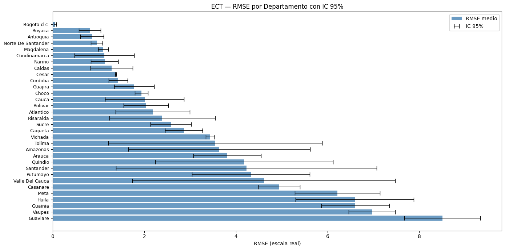
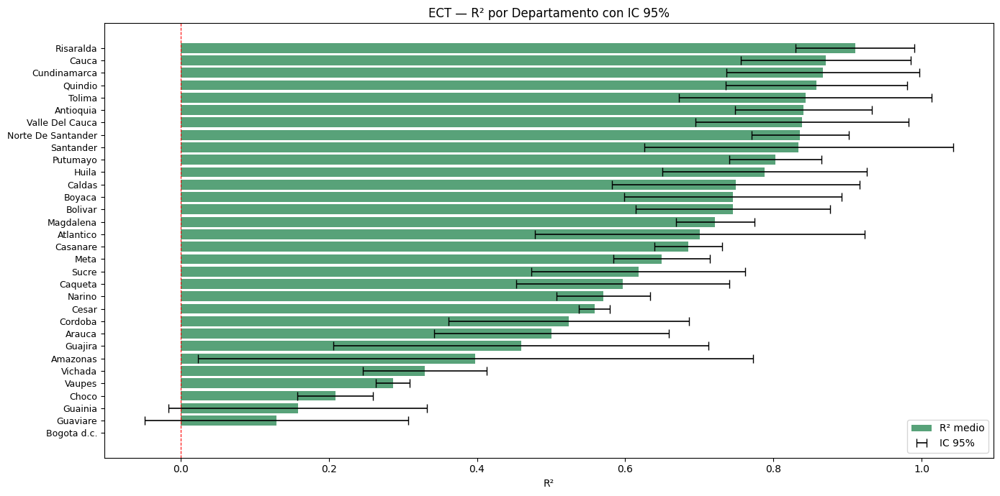
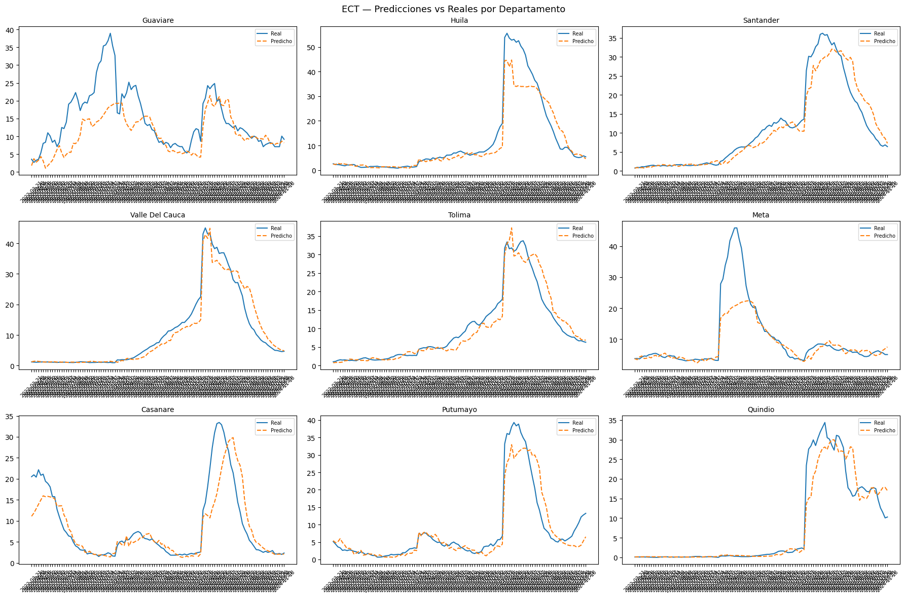
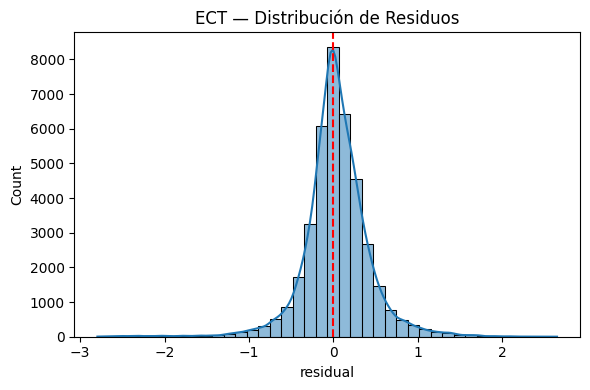
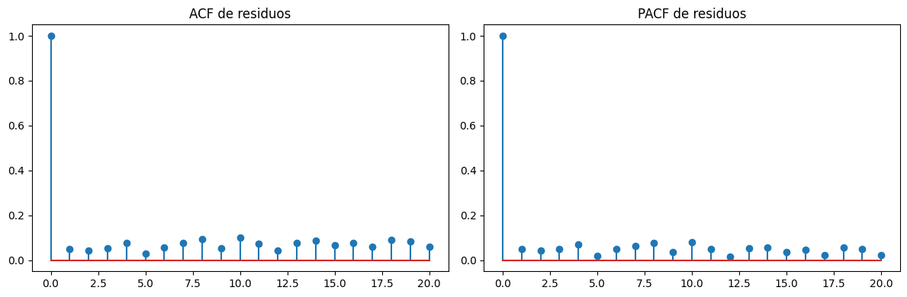
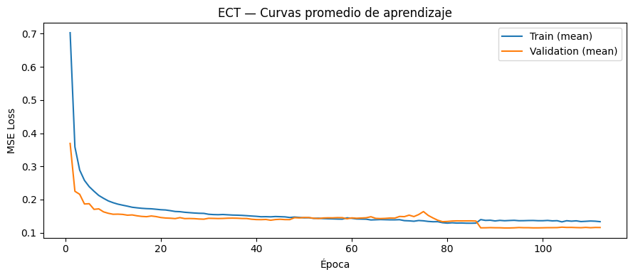
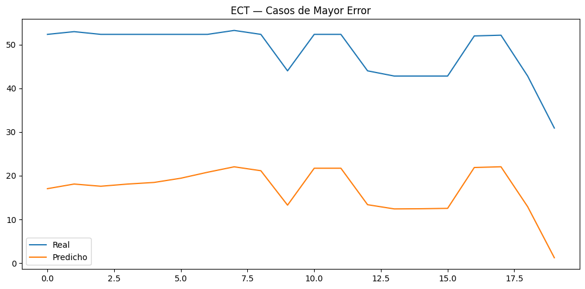

11. ECT — EpiClimate-Transformer#
Extensión del Transformer baseline con:
Dual encoder (EpiEncoder + ClimateEncoder) con ramas independientes
Cross-Attention entre series epidemiológicas y covariables climáticas
Adaptive lag module (lags 2–8 semanas aprendidos, no fijos)
Predicciones por departamento con intervalos de confianza
Métricas por departamento (RMSE, MAE, R²)
Mismo esquema de validación temporal nested CV que el baseline DCRNN
11.1. Librerías#
import os
import copy
import random
import optuna
import numpy as np
import pandas as pd
from sklearn.preprocessing import RobustScaler
from sklearn.metrics import (
mean_squared_error,
mean_absolute_error,
r2_score
)
import torch
import torch.nn as nn
import torch.nn.functional as F
from torch.utils.data import (
Dataset,
DataLoader
)
import math
import sys
import time
import scipy.stats as st
import matplotlib.pyplot as plt
import seaborn as sns
from statsmodels.stats.diagnostic import acorr_ljungbox
from statsmodels.tsa.stattools import acf, pacf
/home/moon/miniconda3/envs/deeplearning/lib/python3.11/site-packages/tqdm/auto.py:21: TqdmWarning: IProgress not found. Please update jupyter and ipywidgets. See https://ipywidgets.readthedocs.io/en/stable/user_install.html
from .autonotebook import tqdm as notebook_tqdm
11.2. Configuración Reproducibilidad#
SEEDS = [42, 123, 2024]
DEVICE = torch.device(
"cuda" if torch.cuda.is_available()
else "cpu"
)
print("DEVICE:", DEVICE)
if torch.cuda.is_available():
print("GPU:", torch.cuda.get_device_name(0))
print("Python:", sys.version)
print("Torch:", torch.__version__)
print("Numpy:", np.__version__)
print("Pandas:", pd.__version__)
DEVICE: cuda
GPU: NVIDIA GeForce RTX 5050 Laptop GPU
Python: 3.11.15 (main, Mar 11 2026, 17:20:07) [GCC 14.3.0]
Torch: 2.12.0.dev20260407+cu128
Numpy: 2.4.3
Pandas: 3.0.2
def set_seed(seed=42):
random.seed(seed)
np.random.seed(seed)
torch.manual_seed(seed)
torch.cuda.manual_seed(seed)
torch.cuda.manual_seed_all(seed)
torch.backends.cudnn.deterministic = True
torch.backends.cudnn.benchmark = False
torch.use_deterministic_algorithms(True)
os.environ["PYTHONHASHSEED"] = str(seed)
print(f"Seed fijada: {seed}")
def seed_worker(worker_id):
worker_seed = torch.initial_seed() % 2**32
np.random.seed(worker_seed)
random.seed(worker_seed)
g = torch.Generator()
11.3. Carga de Datos & Preprocesamiento#
11.3.1. Carga de Datos#
# ============================================================
# LOAD DATA
# ============================================================
df = pd.read_csv("/home/moon/DEEP/PF/CODE/PF/df_full.csv")
df["fecha_inicio"] = pd.to_datetime(df["fecha_inicio"])
df = df.sort_values(
["departamento", "fecha_inicio"]
).reset_index(drop=True)
print(f"Filas: {df.shape[0]} | Columnas: {df.shape[1]}")
df.head()
Filas: 21664 | Columnas: 52
| departamento | fecha_inicio | ano | semana | casos | casos_mujeres | casos_hombres | casos_rural | casos_urbano | n_0_4 | ... | precip_lag_20 | temp_c | temp_lag_1 | temp_lag_2 | temp_lag_3 | temp_lag_4 | temp_lag_8 | temp_lag_12 | temp_lag_20 | dpto_ccdgo | |
|---|---|---|---|---|---|---|---|---|---|---|---|---|---|---|---|---|---|---|---|---|---|
| 0 | Amazonas | 2012-01-02 | 2012 | 1 | 0.0 | 0 | 0 | 0 | 0 | 0 | ... | 39.108242 | 24.848668 | 24.890654 | 24.334752 | 24.545618 | 25.345678 | 25.278160 | 25.874930 | 24.364443 | 91 |
| 1 | Amazonas | 2012-01-09 | 2012 | 2 | 0.0 | 0 | 0 | 0 | 0 | 0 | ... | 62.830250 | 24.729721 | 24.848668 | 24.890654 | 24.334752 | 24.545618 | 25.084141 | 25.495665 | 24.971798 | 91 |
| 2 | Amazonas | 2012-01-16 | 2012 | 3 | 0.0 | 0 | 0 | 0 | 0 | 0 | ... | 42.988018 | 24.638674 | 24.729721 | 24.848668 | 24.890654 | 24.334752 | 25.751070 | 25.760539 | 25.304947 | 91 |
| 3 | Amazonas | 2012-01-23 | 2012 | 4 | 0.0 | 0 | 0 | 0 | 0 | 0 | ... | 56.572467 | 25.164008 | 24.638674 | 24.729721 | 24.848668 | 24.890654 | 25.284157 | 25.842089 | 25.166142 | 91 |
| 4 | Amazonas | 2012-01-30 | 2012 | 5 | 0.0 | 0 | 0 | 0 | 0 | 0 | ... | 74.893047 | 24.604644 | 25.164008 | 24.638674 | 24.729721 | 24.848668 | 25.345678 | 25.278160 | 25.312395 | 91 |
5 rows × 52 columns
11.3.2. Feature Engineering#
El ECT mantiene las mismas features que el baseline, pero las separa en dos grupos:
EPIFEATURES: serie de incidencia (lags epidemiológicos + variables socioeconómicas)
CLIMFEATURES: covariables climáticas (temperatura, humedad, precipitación)
df["semana"] = df["semana"].astype(int)
df["ano"] = df["fecha_inicio"].dt.year
weeks_per_year = df.groupby("ano")["semana"].transform("max")
df["week_norm"] = df["semana"] / weeks_per_year
df["week_sin"] = np.sin(2 * np.pi * df["week_norm"])
df["week_cos"] = np.cos(2 * np.pi * df["week_norm"])
# Rama epidemiológica
EPIFEATURES = [
"inc_lag_1", "inc_lag_2", "inc_lag_3", "inc_lag_4",
"inc_lag_8", "inc_lag_12", "inc_lag_20",
"poblacion",
"prop_rural",
"week_sin",
"week_cos"
]
# Rama climática
CLIMFEATURES = [
"temp_lag_1", "temp_lag_2", "temp_lag_4",
"temp_lag_8", "temp_lag_12", "temp_lag_20",
"humedad_lag_1", "humedad_lag_2", "humedad_lag_4",
"humedad_lag_8", "humedad_lag_12","humedad_lag_20",
"precip_lag_1", "precip_lag_2", "precip_lag_4",
"precip_lag_8", "precip_lag_12", "precip_lag_20",
]
# Lista unificada (para crear ventanas de forma consistente)
FEATURES = EPIFEATURES + CLIMFEATURES
df["incidencia_log"] = np.log1p(df["incidencia"])
TARGET = "incidencia_log"
N_EPI = len(EPIFEATURES)
N_CLIM = len(CLIMFEATURES)
print(f"EpiFeatures : {N_EPI}")
print(f"ClimFeatures: {N_CLIM}")
print(f"Total : {len(FEATURES)} | Target: {TARGET}")
EpiFeatures : 11
ClimFeatures: 18
Total : 29 | Target: incidencia_log
11.3.3. Índices de Departamentos#
departments = sorted(df["departamento"].unique())
dept_to_idx = {d: i for i, d in enumerate(departments)}
idx_to_dept = {i: d for d, i in dept_to_idx.items()}
NUM_NODES = len(departments)
print(f"NUM_NODES: {NUM_NODES}")
NUM_NODES: 32
11.4. Esquema Validación Temporal#
def create_outer_folds(df, date_col="fecha_inicio"):
folds = []
outer_years = [2022, 2023, 2024]
for test_year in outer_years:
train_df = df[df[date_col].dt.year < test_year].copy()
test_df = df[df[date_col].dt.year == test_year].copy()
folds.append({
"test_year": test_year,
"train_df": train_df,
"test_df": test_df
})
return folds
def create_inner_folds(train_df, val_years=[2019, 2020, 2021]):
inner_folds = []
for val_year in val_years:
inner_train = train_df[
train_df["fecha_inicio"].dt.year < val_year
].copy()
inner_val = train_df[
train_df["fecha_inicio"].dt.year == val_year
].copy()
inner_folds.append({
"val_year": val_year,
"inner_train": inner_train,
"inner_val": inner_val
})
return inner_folds
outer_folds = create_outer_folds(df)
11.5. Ventanas de Tiempo & Escalamiento#
def create_windows(df, features, target, window_size=12, horizon=4):
pivot_features = []
for feat in features:
pivot = df.pivot_table(
index="fecha_inicio",
columns="departamento",
values=feat
).sort_index()
pivot_features.append(pivot.values)
X_all = np.stack(pivot_features, axis=-1) # (T, nodes, n_features)
target_pivot = df.pivot_table(
index="fecha_inicio",
columns="departamento",
values=target
).sort_index()
y_all = target_pivot.values
dates = target_pivot.index.values
X, y, base_dates = [], [], []
total_steps = len(dates)
for i in range(total_steps - window_size - horizon + 1):
X.append(X_all[i : i + window_size])
y.append(y_all[i + window_size : i + window_size + horizon])
base_dates.append(dates[i + window_size - 1])
return (
np.array(X, dtype=np.float32),
np.array(y, dtype=np.float32),
np.array(base_dates)
)
def scale_data(X_train, X_val):
scaler = RobustScaler()
_, _, _, n_f = X_train.shape
X_train_2d = X_train.reshape(-1, n_f)
scaler.fit(X_train_2d)
X_train_sc = scaler.transform(X_train_2d).reshape(X_train.shape)
X_val_sc = scaler.transform(X_val.reshape(-1, n_f)).reshape(X_val.shape)
return X_train_sc, X_val_sc, scaler
11.6. Dataset & Utilidades de Entrenamiento#
class ECTDataset(Dataset):
def __init__(self, X, y):
self.X = torch.tensor(X, dtype=torch.float32)
self.y = torch.tensor(y, dtype=torch.float32)
def __len__(self):
return len(self.X)
def __getitem__(self, idx):
return self.X[idx], self.y[idx]
class EarlyStopping:
def __init__(self, patience=20):
self.patience = patience
self.best_loss = np.inf
self.counter = 0
self.stop = False
def step(self, val_loss):
if val_loss < self.best_loss:
self.best_loss = val_loss
self.counter = 0
else:
self.counter += 1
if self.counter >= self.patience:
self.stop = True
def train_one_epoch(model, dataloader, criterion, optimizer, device, n_epi, n_clim):
model.train()
total_loss = 0
for X_batch, y_batch in dataloader:
X_batch = X_batch.to(device)
y_batch = y_batch.to(device)
optimizer.zero_grad()
pred, _ = model(X_batch, n_epi, n_clim)
loss = criterion(pred, y_batch)
loss.backward()
nn.utils.clip_grad_norm_(model.parameters(), max_norm=1.0)
optimizer.step()
total_loss += loss.item()
return total_loss / len(dataloader)
def validate_one_epoch(model, dataloader, criterion, device, n_epi, n_clim):
model.eval()
total_loss = 0
with torch.no_grad():
for X_batch, y_batch in dataloader:
X_batch = X_batch.to(device)
y_batch = y_batch.to(device)
pred, _ = model(X_batch, n_epi, n_clim)
loss = criterion(pred, y_batch)
total_loss += loss.item()
return total_loss / len(dataloader)
11.7. Arquitectura ECT — EpiClimate-Transformer#
Innovaciones sobre el Transformer baseline:#
EpiEncoder — Transformer encoder sobre los lags de incidencia + variables socioeconómicas.
ClimateEncoder — Transformer encoder independiente sobre covariables climáticas (temp, humedad, precipitación).
AdaptiveLagModule — aprende, por departamento, la ventana de lag relevante dentro del rango 2–8 semanas mediante atención aprendida sobre la dimensión temporal.
CrossModalAttention — módulo Multi-Head Cross-Attention donde la serie epidemiológica (Query) atiende a la representación climática (Key/Value), aprendiendo cuándo y cuánto pesa el clima sobre la epidemia.
Fusion + Output head — proyección final con dropout hacia el horizonte H=4 para cada nodo (departamento).
class PositionalEncoding(nn.Module):
def __init__(self, d_model, max_len=256, dropout=0.1):
super().__init__()
self.dropout = nn.Dropout(dropout)
pe = torch.zeros(max_len, d_model)
pos = torch.arange(0, max_len).unsqueeze(1).float()
div = torch.exp(
torch.arange(0, d_model, 2).float() * (-math.log(10000.0) / d_model)
)
pe[:, 0::2] = torch.sin(pos * div)
pe[:, 1::2] = torch.cos(pos * div)
self.register_buffer("pe", pe.unsqueeze(0))
def forward(self, x):
x = x + self.pe[:, :x.size(1)]
return self.dropout(x)
class AdaptiveLagModule(nn.Module):
def __init__(self, d_model, max_lag=8):
super().__init__()
self.max_lag = max_lag
self.attn_proj = nn.Linear(d_model, 1)
def forward(self, x):
B, T, N, D = x.shape
x_lag = x[:, -self.max_lag:, :, :]
L = x_lag.shape[1]
scores = self.attn_proj(x_lag).squeeze(-1).permute(0, 2, 1)
weights = F.softmax(scores, dim=-1)
x_perm = x_lag.permute(0, 2, 1, 3)
context = torch.einsum("bnl,bnld->bnd", weights, x_perm)
return context, weights
class CrossModalAttention(nn.Module):
def __init__(self, d_model, n_heads, dropout=0.1):
super().__init__()
assert d_model % n_heads == 0, "d_model debe ser divisible por n_heads"
self.mha = nn.MultiheadAttention(
embed_dim = d_model,
num_heads = n_heads,
dropout = dropout,
batch_first = True
)
self.norm = nn.LayerNorm(d_model)
self.dropout = nn.Dropout(dropout)
def forward(self, epi_ctx, clim_ctx):
attn_out, attn_weights = self.mha(
query = epi_ctx,
key = clim_ctx,
value = clim_ctx
)
fused = self.norm(epi_ctx + self.dropout(attn_out))
return fused, attn_weights
class ModalEncoder(nn.Module):
def __init__(self, in_features, d_model, n_heads, n_layers,
dim_feedforward, dropout=0.1):
super().__init__()
self.input_proj = nn.Linear(in_features, d_model)
self.pos_enc = PositionalEncoding(d_model, dropout=dropout)
encoder_layer = nn.TransformerEncoderLayer(
d_model = d_model,
nhead = n_heads,
dim_feedforward = dim_feedforward,
dropout = dropout,
batch_first = True,
norm_first = True
)
self.encoder = nn.TransformerEncoder(
encoder_layer,
num_layers = n_layers,
enable_nested_tensor=False
)
def forward(self, x):
x = self.input_proj(x)
x = self.pos_enc(x)
x = self.encoder(x)
return x
class EpiClimateTransformer(nn.Module):
def __init__(
self,
num_nodes,
n_epi,
n_clim,
d_model = 64,
n_heads = 4,
n_layers = 2,
dim_ff = 128,
horizon = 4,
max_lag = 8,
dropout = 0.1
):
super().__init__()
self.num_nodes = num_nodes
self.horizon = horizon
self.d_model = d_model
self.epi_encoder = ModalEncoder(
in_features = n_epi,
d_model = d_model,
n_heads = n_heads,
n_layers = n_layers,
dim_feedforward = dim_ff,
dropout = dropout
)
self.clim_encoder = ModalEncoder(
in_features = n_clim,
d_model = d_model,
n_heads = n_heads,
n_layers = n_layers,
dim_feedforward = dim_ff,
dropout = dropout
)
self.lag_epi = AdaptiveLagModule(d_model, max_lag=max_lag)
self.lag_clim = AdaptiveLagModule(d_model, max_lag=max_lag)
self.cross_attn = CrossModalAttention(d_model, n_heads, dropout)
self.dropout = nn.Dropout(dropout)
self.fc = nn.Linear(d_model, horizon)
def forward(self, x, n_epi, n_clim):
B, T, N, _ = x.shape
X_epi = x[:, :, :, :n_epi]
X_clim = x[:, :, :, n_epi:n_epi+n_clim]
X_epi_flat = X_epi.permute(0, 2, 1, 3).reshape(B * N, T, n_epi)
epi_enc = self.epi_encoder(X_epi_flat)
epi_enc = epi_enc.reshape(B, N, T, self.d_model).permute(0, 2, 1, 3)
X_clim_flat = X_clim.permute(0, 2, 1, 3).reshape(B * N, T, n_clim)
clim_enc = self.clim_encoder(X_clim_flat)
clim_enc = clim_enc.reshape(B, N, T, self.d_model).permute(0, 2, 1, 3)
epi_ctx, _ = self.lag_epi(epi_enc)
clim_ctx, lag_weights = self.lag_clim(clim_enc)
fused, attn_cross = self.cross_attn(epi_ctx, clim_ctx)
out = self.fc(self.dropout(fused))
out = out.permute(0, 2, 1)
return out, attn_cross
11.8. Optimización de Hiperparámetros (Optuna)#
Se mantienen los hiperparámetros del baseline y se añaden los específicos del ECT:
d_model: dimensión interna del Transformern_heads: cabezas de atenciónn_layers: capas por encoderdim_ff: dimensión feedforwardmax_lag: ventana máxima del AdaptiveLagModule
ALL_OPTUNA_TRIALS = []
ALL_OPTUNA_FOLDS = []
ALL_RESIDUALS = []
ALL_INFERENCE_TIME = []
ALL_BEST_PARAMS = []
ALL_RESULTS = []
ALL_PREDICTIONS = []
ALL_LOSSES = []
TUNING_DF = df[df["fecha_inicio"].dt.year < 2022].copy()
INNER_FOLDS_TUNING = create_inner_folds(
TUNING_DF,
val_years=[2019, 2020, 2021]
)
def objective(trial):
window_size = trial.suggest_categorical("window_size", [4, 8, 12, 16])
learning_rate = trial.suggest_float( "learning_rate", 1e-4, 1e-2, log=True)
batch_size = trial.suggest_categorical("batch_size", [16, 32])
dropout = trial.suggest_float( "dropout", 0.0, 0.4, step=0.1)
d_model = trial.suggest_categorical("d_model", [32, 64, 128])
n_heads = trial.suggest_categorical("n_heads", [2, 4, 8])
n_layers = trial.suggest_int( "n_layers", 1, 4)
dim_ff = trial.suggest_categorical("dim_ff", [64, 128, 256])
max_lag = trial.suggest_int( "max_lag", 2, 8)
if d_model % n_heads != 0:
raise optuna.exceptions.TrialPruned()
rmse_folds = []
fold_errors = []
for fold_id, fold in enumerate(INNER_FOLDS_TUNING):
X_train, y_train, _ = create_windows(
fold["inner_train"], FEATURES, TARGET, window_size, 4
)
X_val, y_val, _ = create_windows(
fold["inner_val"], FEATURES, TARGET, window_size, 4
)
X_train_sc, X_val_sc, _ = scale_data(X_train, X_val)
train_loader = DataLoader(
ECTDataset(X_train_sc, y_train),
batch_size=batch_size, shuffle=False,
worker_init_fn=seed_worker, generator=g
)
val_loader = DataLoader(
ECTDataset(X_val_sc, y_val),
batch_size=batch_size, shuffle=False
)
model = EpiClimateTransformer(
num_nodes = NUM_NODES,
n_epi = N_EPI,
n_clim = N_CLIM,
d_model = d_model,
n_heads = n_heads,
n_layers = n_layers,
dim_ff = dim_ff,
horizon = 4,
max_lag = max_lag,
dropout = dropout
).to(DEVICE)
criterion = nn.MSELoss()
optimizer = torch.optim.Adam(model.parameters(), lr=learning_rate)
early_stopping = EarlyStopping(patience=10)
for epoch in range(50):
train_one_epoch(model, train_loader, criterion, optimizer,
DEVICE, N_EPI, N_CLIM)
val_loss = validate_one_epoch(model, val_loader, criterion,
DEVICE, N_EPI, N_CLIM)
early_stopping.step(val_loss)
if early_stopping.stop:
break
model.eval()
preds_list, trues_list = [], []
with torch.no_grad():
for X_batch, y_batch in val_loader:
pred, _ = model(X_batch.to(DEVICE), N_EPI, N_CLIM)
preds_list.append(pred.cpu().numpy())
trues_list.append(y_batch.numpy())
preds_np = np.concatenate(preds_list)
trues_np = np.concatenate(trues_list)
errors = trues_np - preds_np
rmse = np.sqrt(mean_squared_error(trues_np.flatten(), preds_np.flatten()))
rmse_folds.append(rmse)
fold_errors.append({
"trial": trial.number, "seed": seed, "fold": fold_id,
"rmse": rmse,
"error_mean": float(np.mean(errors)),
"error_std": float(np.std(errors))
})
rmse_mean = float(np.mean(rmse_folds))
rmse_std = float(np.std(rmse_folds))
ALL_OPTUNA_TRIALS.append({
"trial": trial.number, "seed": seed,
"window_size": window_size, "learning_rate": learning_rate,
"batch_size": batch_size, "dropout": dropout,
"d_model": d_model, "n_heads": n_heads,
"n_layers": n_layers, "dim_ff": dim_ff, "max_lag": max_lag,
"rmse_mean": rmse_mean, "rmse_std": rmse_std
})
ALL_OPTUNA_FOLDS.extend(fold_errors)
trial.set_user_attr("rmse_folds", rmse_folds)
trial.set_user_attr("rmse_std", rmse_std)
return rmse_mean
11.9. Pipeline Principal — Train, Validation & Test#
Para cada semilla: optimización Optuna → entrenamiento en outer folds → evaluación en test.
for seed in SEEDS:
print("\n" + "="*100)
print(f"SEED {seed}")
print("="*100)
set_seed(seed)
sampler = optuna.samplers.TPESampler(seed=seed)
study = optuna.create_study(direction="minimize", sampler=sampler)
study.optimize(objective, n_trials=30)
best_params = study.best_trial.params
print(f"\nMejores hiperparámetros para seed {seed}:")
print(best_params)
pd.DataFrame([{"seed": seed, **best_params}]).to_csv(
f"Modelos/ECT/ect_best_params_seed_{seed}.csv",
index=False
)
ALL_BEST_PARAMS.append({"seed": seed, **best_params})
for outer_idx, outer_fold in enumerate(outer_folds):
print("\n" + "="*100)
print(f"OUTER FOLD {outer_idx+1} | Test year: {outer_fold['test_year']}")
print("="*100)
outer_train_df = outer_fold["train_df"]
final_test_df = outer_fold["test_df"]
window_size = best_params["window_size"]
d_model = best_params["d_model"]
n_heads = best_params["n_heads"]
n_layers = best_params["n_layers"]
dim_ff = best_params["dim_ff"]
max_lag = best_params["max_lag"]
dropout = best_params["dropout"]
learning_rate = best_params["learning_rate"]
batch_size = best_params["batch_size"]
val_year = outer_train_df["fecha_inicio"].dt.year.max()
final_train_df = outer_train_df[outer_train_df["fecha_inicio"].dt.year < val_year]
final_val_df = outer_train_df[outer_train_df["fecha_inicio"].dt.year == val_year]
X_train, y_train, train_dates = create_windows(
final_train_df, FEATURES, TARGET, window_size, 4
)
X_val, y_val, val_dates = create_windows(
final_val_df, FEATURES, TARGET, window_size, 4
)
X_test, y_test, test_dates = create_windows(
final_test_df, FEATURES, TARGET, window_size, 4
)
X_train_sc, X_val_sc, scaler = scale_data(X_train, X_val)
X_test_sc = scaler.transform(
X_test.reshape(-1, X_test.shape[-1])
).reshape(X_test.shape)
train_loader = DataLoader(
ECTDataset(X_train_sc, y_train),
batch_size=batch_size, shuffle=False
)
val_loader = DataLoader(
ECTDataset(X_val_sc, y_val),
batch_size=batch_size, shuffle=False
)
test_loader = DataLoader(
ECTDataset(X_test_sc, y_test),
batch_size=batch_size, shuffle=False
)
model = EpiClimateTransformer(
num_nodes = NUM_NODES,
n_epi = N_EPI,
n_clim = N_CLIM,
d_model = d_model,
n_heads = n_heads,
n_layers = n_layers,
dim_ff = dim_ff,
horizon = 4,
max_lag = max_lag,
dropout = dropout
).to(DEVICE)
criterion = nn.MSELoss()
optimizer = torch.optim.Adam(model.parameters(), lr=learning_rate)
scheduler = torch.optim.lr_scheduler.ReduceLROnPlateau(
optimizer, mode="min", factor=0.5, patience=10
)
early_stopping = EarlyStopping(patience=20)
best_model = None
best_loss = np.inf
total_train_time = 0.0
for epoch in range(300):
start_epoch = time.time()
train_loss = train_one_epoch(
model, train_loader, criterion, optimizer,
DEVICE, N_EPI, N_CLIM
)
val_loss = validate_one_epoch(
model, val_loader, criterion,
DEVICE, N_EPI, N_CLIM
)
scheduler.step(val_loss)
epoch_time = time.time() - start_epoch
total_train_time += epoch_time
print(
f"Epoch {epoch+1:3d}"
f" | Train {train_loss:.4f}"
f" | Val {val_loss:.4f}"
f" | Time {epoch_time:.2f}s"
)
ALL_LOSSES.append({
"seed": seed, "outer_fold": outer_idx + 1,
"test_year": outer_fold["test_year"],
"epoch": epoch + 1,
"train_loss": train_loss,
"val_loss": val_loss,
"epoch_time": epoch_time
})
if val_loss < best_loss:
best_loss = val_loss
best_model = copy.deepcopy(model)
early_stopping.step(val_loss)
if early_stopping.stop:
break
model = best_model
torch.save(
model.state_dict(),
f"Modelos/ECT/ect_seed_{seed}_outer_fold_{outer_idx+1}.pt"
)
model.eval()
start_inference = time.time()
predictions, targets = [], []
with torch.no_grad():
for X_batch, y_batch in test_loader:
pred, _ = model(X_batch.to(DEVICE), N_EPI, N_CLIM)
predictions.append(pred.cpu().numpy())
targets.append(y_batch.numpy())
inference_time = time.time() - start_inference
predictions = np.concatenate(predictions)
targets = np.concatenate(targets)
mse = mean_squared_error(targets.flatten(), predictions.flatten())
rmse = np.sqrt(mse)
mae = mean_absolute_error(targets.flatten(), predictions.flatten())
r2 = r2_score(targets.flatten(), predictions.flatten())
ALL_RESULTS.append({
"seed": seed, "outer_fold": outer_idx + 1,
"test_year": outer_fold["test_year"],
"mse": mse, "rmse": rmse, "mae": mae, "r2": r2,
"train_time": total_train_time,
"inference_time": inference_time
})
ALL_INFERENCE_TIME.append({
"seed": seed, "outer_fold": outer_idx + 1,
"test_year": outer_fold["test_year"],
"inference_time": inference_time,
"train_time": total_train_time
})
rows = []
for i in range(len(predictions)):
for h in range(4):
for node in range(NUM_NODES):
y_true = targets[i, h, node]
y_pred = predictions[i, h, node]
residual = y_true - y_pred
rows.append({
"seed": seed,
"outer_fold": outer_idx + 1,
"test_year": outer_fold["test_year"],
"departamento": idx_to_dept[node],
"fecha_base": test_dates[i],
"horizonte": h + 1,
"y_true_log": y_true,
"y_pred_log": y_pred,
"y_true_real": np.expm1(y_true),
"y_pred_real": np.expm1(y_pred),
"residual": residual,
"abs_error": abs(residual),
"sq_error": residual ** 2
})
ALL_RESIDUALS.append({
"seed": seed, "outer_fold": outer_idx + 1,
"test_year": outer_fold["test_year"],
"departamento": idx_to_dept[node],
"fecha_base": test_dates[i],
"horizonte": h + 1,
"residual": residual
})
ALL_PREDICTIONS.append(pd.DataFrame(rows))
[I 2026-06-02 22:40:05,813] A new study created in memory with name: no-name-b8adb742-d021-4509-91a5-aa41a7a98586
====================================================================================================
SEED 42
====================================================================================================
Seed fijada: 42
[I 2026-06-02 22:40:46,627] Trial 0 finished with value: 0.42465888494172005 and parameters: {'window_size': 8, 'learning_rate': 0.0002051338263087451, 'batch_size': 16, 'dropout': 0.4, 'd_model': 64, 'n_heads': 2, 'n_layers': 1, 'dim_ff': 256, 'max_lag': 5}. Best is trial 0 with value: 0.42465888494172005.
[I 2026-06-02 22:41:37,306] Trial 1 finished with value: 0.433580534444098 and parameters: {'window_size': 8, 'learning_rate': 0.0005404103854647331, 'batch_size': 32, 'dropout': 0.0, 'd_model': 64, 'n_heads': 2, 'n_layers': 4, 'dim_ff': 64, 'max_lag': 2}. Best is trial 0 with value: 0.42465888494172005.
[I 2026-06-02 22:43:36,841] Trial 2 finished with value: 0.42623504246349087 and parameters: {'window_size': 4, 'learning_rate': 0.00011715937392307068, 'batch_size': 16, 'dropout': 0.30000000000000004, 'd_model': 128, 'n_heads': 4, 'n_layers': 4, 'dim_ff': 256, 'max_lag': 2}. Best is trial 0 with value: 0.42465888494172005.
[I 2026-06-02 22:43:56,888] Trial 3 finished with value: 0.4481591069913092 and parameters: {'window_size': 16, 'learning_rate': 0.00034889766548903674, 'batch_size': 16, 'dropout': 0.1, 'd_model': 128, 'n_heads': 4, 'n_layers': 1, 'dim_ff': 128, 'max_lag': 7}. Best is trial 0 with value: 0.42465888494172005.
[I 2026-06-02 22:44:17,178] Trial 4 finished with value: 0.4651278435424262 and parameters: {'window_size': 4, 'learning_rate': 0.005323617594751502, 'batch_size': 16, 'dropout': 0.0, 'd_model': 128, 'n_heads': 4, 'n_layers': 1, 'dim_ff': 128, 'max_lag': 7}. Best is trial 0 with value: 0.42465888494172005.
[I 2026-06-02 22:44:48,758] Trial 5 finished with value: 0.4440410536249493 and parameters: {'window_size': 8, 'learning_rate': 0.00016435497475111326, 'batch_size': 32, 'dropout': 0.1, 'd_model': 64, 'n_heads': 4, 'n_layers': 1, 'dim_ff': 256, 'max_lag': 7}. Best is trial 0 with value: 0.42465888494172005.
[I 2026-06-02 22:45:21,909] Trial 6 finished with value: 0.4219230665355577 and parameters: {'window_size': 8, 'learning_rate': 0.006097025297491433, 'batch_size': 32, 'dropout': 0.4, 'd_model': 32, 'n_heads': 8, 'n_layers': 1, 'dim_ff': 64, 'max_lag': 2}. Best is trial 6 with value: 0.4219230665355577.
[I 2026-06-02 22:46:23,444] Trial 7 finished with value: 0.455925333449754 and parameters: {'window_size': 8, 'learning_rate': 0.0025470526233391183, 'batch_size': 32, 'dropout': 0.4, 'd_model': 64, 'n_heads': 8, 'n_layers': 3, 'dim_ff': 256, 'max_lag': 3}. Best is trial 6 with value: 0.4219230665355577.
[I 2026-06-02 22:47:18,655] Trial 8 finished with value: 0.47681835257246946 and parameters: {'window_size': 12, 'learning_rate': 0.0022093834415066287, 'batch_size': 16, 'dropout': 0.30000000000000004, 'd_model': 128, 'n_heads': 8, 'n_layers': 2, 'dim_ff': 256, 'max_lag': 6}. Best is trial 6 with value: 0.4219230665355577.
[I 2026-06-02 22:48:41,792] Trial 9 finished with value: 0.4198746130039334 and parameters: {'window_size': 16, 'learning_rate': 0.00022321987366901572, 'batch_size': 16, 'dropout': 0.4, 'd_model': 64, 'n_heads': 2, 'n_layers': 3, 'dim_ff': 64, 'max_lag': 3}. Best is trial 9 with value: 0.4198746130039334.
[I 2026-06-02 22:49:55,225] Trial 10 finished with value: 0.4317626499773028 and parameters: {'window_size': 16, 'learning_rate': 0.0008844120332118486, 'batch_size': 16, 'dropout': 0.2, 'd_model': 32, 'n_heads': 2, 'n_layers': 3, 'dim_ff': 64, 'max_lag': 4}. Best is trial 9 with value: 0.4198746130039334.
[I 2026-06-02 22:50:55,417] Trial 11 finished with value: 0.42071763964832504 and parameters: {'window_size': 16, 'learning_rate': 0.008611382274356353, 'batch_size': 32, 'dropout': 0.4, 'd_model': 32, 'n_heads': 8, 'n_layers': 2, 'dim_ff': 64, 'max_lag': 3}. Best is trial 9 with value: 0.4198746130039334.
[I 2026-06-02 22:52:02,732] Trial 12 finished with value: 0.424477016006809 and parameters: {'window_size': 16, 'learning_rate': 0.001957550079907452, 'batch_size': 32, 'dropout': 0.30000000000000004, 'd_model': 32, 'n_heads': 8, 'n_layers': 2, 'dim_ff': 64, 'max_lag': 4}. Best is trial 9 with value: 0.4198746130039334.
[I 2026-06-02 22:52:35,848] Trial 13 finished with value: 0.44024498936664164 and parameters: {'window_size': 16, 'learning_rate': 0.009244113577377314, 'batch_size': 32, 'dropout': 0.4, 'd_model': 32, 'n_heads': 2, 'n_layers': 3, 'dim_ff': 64, 'max_lag': 4}. Best is trial 9 with value: 0.4198746130039334.
[I 2026-06-02 22:53:45,005] Trial 14 finished with value: 0.41686283436690713 and parameters: {'window_size': 16, 'learning_rate': 0.000973838962225167, 'batch_size': 32, 'dropout': 0.30000000000000004, 'd_model': 64, 'n_heads': 8, 'n_layers': 2, 'dim_ff': 64, 'max_lag': 3}. Best is trial 14 with value: 0.41686283436690713.
[I 2026-06-02 22:54:48,290] Trial 15 finished with value: 0.4503157588156818 and parameters: {'window_size': 12, 'learning_rate': 0.0004719379380299789, 'batch_size': 16, 'dropout': 0.2, 'd_model': 64, 'n_heads': 2, 'n_layers': 3, 'dim_ff': 64, 'max_lag': 3}. Best is trial 14 with value: 0.41686283436690713.
[I 2026-06-02 22:55:27,921] Trial 16 finished with value: 0.40669310624812544 and parameters: {'window_size': 16, 'learning_rate': 0.0010335240648320424, 'batch_size': 32, 'dropout': 0.30000000000000004, 'd_model': 64, 'n_heads': 2, 'n_layers': 2, 'dim_ff': 64, 'max_lag': 5}. Best is trial 16 with value: 0.40669310624812544.
[I 2026-06-02 22:56:36,671] Trial 17 finished with value: 0.4255352467761269 and parameters: {'window_size': 16, 'learning_rate': 0.0014857182261913736, 'batch_size': 32, 'dropout': 0.30000000000000004, 'd_model': 64, 'n_heads': 8, 'n_layers': 2, 'dim_ff': 128, 'max_lag': 5}. Best is trial 16 with value: 0.40669310624812544.
[I 2026-06-02 22:57:49,347] Trial 18 finished with value: 0.41778413193870906 and parameters: {'window_size': 16, 'learning_rate': 0.0009365835212584874, 'batch_size': 32, 'dropout': 0.2, 'd_model': 64, 'n_heads': 8, 'n_layers': 2, 'dim_ff': 64, 'max_lag': 8}. Best is trial 16 with value: 0.40669310624812544.
[I 2026-06-02 22:58:16,701] Trial 19 finished with value: 0.44035732605127365 and parameters: {'window_size': 4, 'learning_rate': 0.0036212324598248868, 'batch_size': 32, 'dropout': 0.2, 'd_model': 64, 'n_heads': 2, 'n_layers': 2, 'dim_ff': 64, 'max_lag': 6}. Best is trial 16 with value: 0.40669310624812544.
[I 2026-06-02 22:59:30,005] Trial 20 finished with value: 0.414845442828845 and parameters: {'window_size': 12, 'learning_rate': 0.0011968026831389194, 'batch_size': 32, 'dropout': 0.30000000000000004, 'd_model': 64, 'n_heads': 8, 'n_layers': 2, 'dim_ff': 128, 'max_lag': 6}. Best is trial 16 with value: 0.40669310624812544.
[I 2026-06-02 23:00:52,002] Trial 21 finished with value: 0.4184561813588877 and parameters: {'window_size': 12, 'learning_rate': 0.001196153369389097, 'batch_size': 32, 'dropout': 0.30000000000000004, 'd_model': 64, 'n_heads': 8, 'n_layers': 2, 'dim_ff': 128, 'max_lag': 6}. Best is trial 16 with value: 0.40669310624812544.
[I 2026-06-02 23:02:09,974] Trial 22 finished with value: 0.41793990050903185 and parameters: {'window_size': 12, 'learning_rate': 0.0006582286998957471, 'batch_size': 32, 'dropout': 0.30000000000000004, 'd_model': 64, 'n_heads': 8, 'n_layers': 2, 'dim_ff': 128, 'max_lag': 5}. Best is trial 16 with value: 0.40669310624812544.
[I 2026-06-02 23:03:30,442] Trial 23 finished with value: 0.4254379181696675 and parameters: {'window_size': 12, 'learning_rate': 0.0014717613731196168, 'batch_size': 32, 'dropout': 0.30000000000000004, 'd_model': 64, 'n_heads': 8, 'n_layers': 2, 'dim_ff': 128, 'max_lag': 5}. Best is trial 16 with value: 0.40669310624812544.
[I 2026-06-02 23:05:26,201] Trial 24 finished with value: 0.42657066297258944 and parameters: {'window_size': 12, 'learning_rate': 0.0007742073473309193, 'batch_size': 32, 'dropout': 0.1, 'd_model': 64, 'n_heads': 8, 'n_layers': 3, 'dim_ff': 128, 'max_lag': 8}. Best is trial 16 with value: 0.40669310624812544.
[I 2026-06-02 23:06:09,570] Trial 25 finished with value: 0.41418280396548135 and parameters: {'window_size': 16, 'learning_rate': 0.0003891532569439433, 'batch_size': 32, 'dropout': 0.30000000000000004, 'd_model': 64, 'n_heads': 2, 'n_layers': 2, 'dim_ff': 64, 'max_lag': 6}. Best is trial 16 with value: 0.40669310624812544.
[I 2026-06-02 23:06:38,229] Trial 26 finished with value: 0.4192994275601451 and parameters: {'window_size': 16, 'learning_rate': 0.0003396181782067003, 'batch_size': 32, 'dropout': 0.2, 'd_model': 64, 'n_heads': 2, 'n_layers': 1, 'dim_ff': 128, 'max_lag': 6}. Best is trial 16 with value: 0.40669310624812544.
[I 2026-06-02 23:07:20,231] Trial 27 finished with value: 0.4211892659082281 and parameters: {'window_size': 12, 'learning_rate': 0.00034458577729997765, 'batch_size': 32, 'dropout': 0.30000000000000004, 'd_model': 64, 'n_heads': 2, 'n_layers': 2, 'dim_ff': 64, 'max_lag': 7}. Best is trial 16 with value: 0.40669310624812544.
[I 2026-06-02 23:08:14,476] Trial 28 finished with value: 0.42540125298377035 and parameters: {'window_size': 4, 'learning_rate': 0.0004712336198584945, 'batch_size': 32, 'dropout': 0.2, 'd_model': 128, 'n_heads': 2, 'n_layers': 3, 'dim_ff': 64, 'max_lag': 6}. Best is trial 16 with value: 0.40669310624812544.
[I 2026-06-02 23:08:45,062] Trial 29 finished with value: 0.4239617167068193 and parameters: {'window_size': 16, 'learning_rate': 0.00020595093280201707, 'batch_size': 32, 'dropout': 0.30000000000000004, 'd_model': 64, 'n_heads': 2, 'n_layers': 1, 'dim_ff': 128, 'max_lag': 5}. Best is trial 16 with value: 0.40669310624812544.
Mejores hiperparámetros para seed 42:
{'window_size': 16, 'learning_rate': 0.0010335240648320424, 'batch_size': 32, 'dropout': 0.30000000000000004, 'd_model': 64, 'n_heads': 2, 'n_layers': 2, 'dim_ff': 64, 'max_lag': 5}
====================================================================================================
OUTER FOLD 1 | Test year: 2022
====================================================================================================
Epoch 1 | Train 0.7961 | Val 0.3840 | Time 0.38s
Epoch 2 | Train 0.4796 | Val 0.1657 | Time 0.34s
Epoch 3 | Train 0.3530 | Val 0.1636 | Time 0.35s
Epoch 4 | Train 0.3058 | Val 0.1408 | Time 0.33s
Epoch 5 | Train 0.2738 | Val 0.1525 | Time 0.34s
Epoch 6 | Train 0.2618 | Val 0.1390 | Time 0.34s
Epoch 7 | Train 0.2486 | Val 0.1395 | Time 0.34s
Epoch 8 | Train 0.2355 | Val 0.1356 | Time 0.33s
Epoch 9 | Train 0.2173 | Val 0.1312 | Time 0.33s
Epoch 10 | Train 0.2090 | Val 0.1229 | Time 0.33s
Epoch 11 | Train 0.2030 | Val 0.1263 | Time 0.34s
Epoch 12 | Train 0.1996 | Val 0.1245 | Time 0.34s
Epoch 13 | Train 0.1972 | Val 0.1230 | Time 0.34s
Epoch 14 | Train 0.1883 | Val 0.1207 | Time 0.33s
Epoch 15 | Train 0.1890 | Val 0.1238 | Time 0.35s
Epoch 16 | Train 0.1830 | Val 0.1203 | Time 0.34s
Epoch 17 | Train 0.1814 | Val 0.1200 | Time 0.34s
Epoch 18 | Train 0.1822 | Val 0.1194 | Time 0.33s
Epoch 19 | Train 0.1793 | Val 0.1222 | Time 0.35s
Epoch 20 | Train 0.1797 | Val 0.1227 | Time 0.33s
Epoch 21 | Train 0.1739 | Val 0.1209 | Time 0.33s
Epoch 22 | Train 0.1726 | Val 0.1206 | Time 0.34s
Epoch 23 | Train 0.1706 | Val 0.1194 | Time 0.34s
Epoch 24 | Train 0.1694 | Val 0.1196 | Time 0.34s
Epoch 25 | Train 0.1692 | Val 0.1201 | Time 0.34s
Epoch 26 | Train 0.1692 | Val 0.1213 | Time 0.36s
Epoch 27 | Train 0.1685 | Val 0.1208 | Time 0.34s
Epoch 28 | Train 0.1671 | Val 0.1208 | Time 0.35s
Epoch 29 | Train 0.1656 | Val 0.1209 | Time 0.34s
Epoch 30 | Train 0.1591 | Val 0.1201 | Time 0.35s
Epoch 31 | Train 0.1557 | Val 0.1202 | Time 0.36s
Epoch 32 | Train 0.1540 | Val 0.1195 | Time 0.35s
Epoch 33 | Train 0.1554 | Val 0.1194 | Time 0.35s
Epoch 34 | Train 0.1533 | Val 0.1195 | Time 0.35s
Epoch 35 | Train 0.1527 | Val 0.1191 | Time 0.34s
Epoch 36 | Train 0.1538 | Val 0.1183 | Time 0.34s
Epoch 37 | Train 0.1528 | Val 0.1185 | Time 0.34s
Epoch 38 | Train 0.1525 | Val 0.1184 | Time 0.34s
Epoch 39 | Train 0.1516 | Val 0.1184 | Time 0.35s
Epoch 40 | Train 0.1534 | Val 0.1182 | Time 0.36s
Epoch 41 | Train 0.1506 | Val 0.1178 | Time 0.34s
Epoch 42 | Train 0.1522 | Val 0.1174 | Time 0.35s
Epoch 43 | Train 0.1494 | Val 0.1172 | Time 0.36s
Epoch 44 | Train 0.1509 | Val 0.1172 | Time 0.33s
Epoch 45 | Train 0.1482 | Val 0.1180 | Time 0.34s
Epoch 46 | Train 0.1510 | Val 0.1171 | Time 0.35s
Epoch 47 | Train 0.1478 | Val 0.1169 | Time 0.33s
Epoch 48 | Train 0.1495 | Val 0.1175 | Time 0.35s
Epoch 49 | Train 0.1493 | Val 0.1160 | Time 0.35s
Epoch 50 | Train 0.1498 | Val 0.1167 | Time 0.35s
Epoch 51 | Train 0.1514 | Val 0.1176 | Time 0.36s
Epoch 52 | Train 0.1470 | Val 0.1175 | Time 0.34s
Epoch 53 | Train 0.1492 | Val 0.1166 | Time 0.34s
Epoch 54 | Train 0.1463 | Val 0.1166 | Time 0.34s
Epoch 55 | Train 0.1459 | Val 0.1170 | Time 0.33s
Epoch 56 | Train 0.1459 | Val 0.1171 | Time 0.47s
Epoch 57 | Train 0.1460 | Val 0.1175 | Time 0.39s
Epoch 58 | Train 0.1460 | Val 0.1181 | Time 0.35s
Epoch 59 | Train 0.1456 | Val 0.1166 | Time 0.33s
Epoch 60 | Train 0.1450 | Val 0.1163 | Time 0.39s
Epoch 61 | Train 0.1442 | Val 0.1165 | Time 0.33s
Epoch 62 | Train 0.1436 | Val 0.1171 | Time 0.34s
Epoch 63 | Train 0.1405 | Val 0.1166 | Time 0.33s
Epoch 64 | Train 0.1406 | Val 0.1160 | Time 0.35s
Epoch 65 | Train 0.1413 | Val 0.1160 | Time 0.34s
Epoch 66 | Train 0.1420 | Val 0.1161 | Time 0.34s
Epoch 67 | Train 0.1405 | Val 0.1157 | Time 0.33s
Epoch 68 | Train 0.1399 | Val 0.1159 | Time 0.33s
Epoch 69 | Train 0.1410 | Val 0.1154 | Time 0.32s
Epoch 70 | Train 0.1406 | Val 0.1155 | Time 0.31s
Epoch 71 | Train 0.1390 | Val 0.1153 | Time 0.32s
Epoch 72 | Train 0.1399 | Val 0.1152 | Time 0.32s
Epoch 73 | Train 0.1399 | Val 0.1152 | Time 0.32s
Epoch 74 | Train 0.1406 | Val 0.1150 | Time 0.32s
Epoch 75 | Train 0.1390 | Val 0.1152 | Time 0.31s
Epoch 76 | Train 0.1380 | Val 0.1155 | Time 0.33s
Epoch 77 | Train 0.1380 | Val 0.1155 | Time 0.33s
Epoch 78 | Train 0.1430 | Val 0.1154 | Time 0.33s
Epoch 79 | Train 0.1384 | Val 0.1151 | Time 0.35s
Epoch 80 | Train 0.1370 | Val 0.1152 | Time 0.36s
Epoch 81 | Train 0.1395 | Val 0.1152 | Time 0.34s
Epoch 82 | Train 0.1385 | Val 0.1146 | Time 0.36s
Epoch 83 | Train 0.1383 | Val 0.1147 | Time 0.34s
Epoch 84 | Train 0.1382 | Val 0.1147 | Time 0.34s
Epoch 85 | Train 0.1380 | Val 0.1149 | Time 0.34s
Epoch 86 | Train 0.1377 | Val 0.1147 | Time 0.36s
Epoch 87 | Train 0.1397 | Val 0.1149 | Time 0.35s
Epoch 88 | Train 0.1373 | Val 0.1150 | Time 0.35s
Epoch 89 | Train 0.1378 | Val 0.1155 | Time 0.36s
Epoch 90 | Train 0.1356 | Val 0.1151 | Time -0.38s
Epoch 91 | Train 0.1373 | Val 0.1151 | Time 0.35s
Epoch 92 | Train 0.1362 | Val 0.1144 | Time 0.35s
Epoch 93 | Train 0.1370 | Val 0.1145 | Time 0.34s
Epoch 94 | Train 0.1375 | Val 0.1149 | Time 0.35s
Epoch 95 | Train 0.1363 | Val 0.1158 | Time 0.35s
Epoch 96 | Train 0.1364 | Val 0.1152 | Time 0.33s
Epoch 97 | Train 0.1369 | Val 0.1153 | Time 0.35s
Epoch 98 | Train 0.1370 | Val 0.1147 | Time 0.34s
Epoch 99 | Train 0.1363 | Val 0.1148 | Time 0.34s
Epoch 100 | Train 0.1363 | Val 0.1150 | Time 0.33s
Epoch 101 | Train 0.1372 | Val 0.1153 | Time 0.35s
Epoch 102 | Train 0.1358 | Val 0.1154 | Time 0.35s
Epoch 103 | Train 0.1364 | Val 0.1155 | Time 0.34s
Epoch 104 | Train 0.1328 | Val 0.1168 | Time 0.35s
Epoch 105 | Train 0.1363 | Val 0.1161 | Time 0.33s
Epoch 106 | Train 0.1349 | Val 0.1162 | Time 0.34s
Epoch 107 | Train 0.1359 | Val 0.1156 | Time 0.35s
Epoch 108 | Train 0.1337 | Val 0.1153 | Time 0.35s
Epoch 109 | Train 0.1345 | Val 0.1162 | Time 0.34s
Epoch 110 | Train 0.1354 | Val 0.1152 | Time 0.35s
Epoch 111 | Train 0.1348 | Val 0.1160 | Time 0.34s
Epoch 112 | Train 0.1334 | Val 0.1158 | Time 0.35s
====================================================================================================
OUTER FOLD 2 | Test year: 2023
====================================================================================================
Epoch 1 | Train 0.7963 | Val 0.4533 | Time 0.43s
Epoch 2 | Train 0.4130 | Val 0.2739 | Time 0.41s
Epoch 3 | Train 0.3170 | Val 0.2524 | Time 0.41s
Epoch 4 | Train 0.2860 | Val 0.2165 | Time 0.38s
Epoch 5 | Train 0.2745 | Val 0.2324 | Time 0.38s
Epoch 6 | Train 0.2626 | Val 0.1976 | Time 0.39s
Epoch 7 | Train 0.2317 | Val 0.1896 | Time 0.39s
Epoch 8 | Train 0.2229 | Val 0.1727 | Time 0.38s
Epoch 9 | Train 0.2200 | Val 0.1739 | Time 0.39s
Epoch 10 | Train 0.2104 | Val 0.1663 | Time 0.38s
Epoch 11 | Train 0.2042 | Val 0.1633 | Time 0.37s
Epoch 12 | Train 0.1994 | Val 0.1621 | Time 0.38s
Epoch 13 | Train 0.1951 | Val 0.1555 | Time 0.36s
Epoch 14 | Train 0.1942 | Val 0.1561 | Time 0.37s
Epoch 15 | Train 0.1899 | Val 0.1520 | Time 0.37s
Epoch 16 | Train 0.1877 | Val 0.1522 | Time 0.36s
Epoch 17 | Train 0.1859 | Val 0.1496 | Time 0.37s
Epoch 18 | Train 0.1853 | Val 0.1504 | Time 0.38s
Epoch 19 | Train 0.1828 | Val 0.1491 | Time 0.37s
Epoch 20 | Train 0.1810 | Val 0.1476 | Time 0.37s
Epoch 21 | Train 0.1784 | Val 0.1458 | Time 0.38s
Epoch 22 | Train 0.1783 | Val 0.1453 | Time 0.37s
Epoch 23 | Train 0.1762 | Val 0.1456 | Time 0.38s
Epoch 24 | Train 0.1740 | Val 0.1467 | Time 0.37s
Epoch 25 | Train 0.1741 | Val 0.1436 | Time 0.38s
Epoch 26 | Train 0.1748 | Val 0.1461 | Time 0.37s
Epoch 27 | Train 0.1735 | Val 0.1452 | Time 0.37s
Epoch 28 | Train 0.1724 | Val 0.1439 | Time 0.37s
Epoch 29 | Train 0.1718 | Val 0.1428 | Time 0.36s
Epoch 30 | Train 0.1683 | Val 0.1433 | Time 0.36s
Epoch 31 | Train 0.1684 | Val 0.1446 | Time 0.36s
Epoch 32 | Train 0.1666 | Val 0.1443 | Time 0.38s
Epoch 33 | Train 0.1661 | Val 0.1431 | Time 0.37s
Epoch 34 | Train 0.1677 | Val 0.1450 | Time 0.37s
Epoch 35 | Train 0.1628 | Val 0.1415 | Time 0.36s
Epoch 36 | Train 0.1644 | Val 0.1442 | Time 0.36s
Epoch 37 | Train 0.1641 | Val 0.1448 | Time 0.36s
Epoch 38 | Train 0.1641 | Val 0.1429 | Time 0.37s
Epoch 39 | Train 0.1629 | Val 0.1438 | Time 0.37s
Epoch 40 | Train 0.1638 | Val 0.1430 | Time 0.37s
Epoch 41 | Train 0.1639 | Val 0.1433 | Time 0.36s
Epoch 42 | Train 0.1626 | Val 0.1433 | Time 0.37s
Epoch 43 | Train 0.1613 | Val 0.1454 | Time 0.37s
Epoch 44 | Train 0.1599 | Val 0.1432 | Time 0.36s
Epoch 45 | Train 0.1599 | Val 0.1434 | Time 0.37s
Epoch 46 | Train 0.1577 | Val 0.1424 | Time 0.38s
Epoch 47 | Train 0.1510 | Val 0.1403 | Time 0.36s
Epoch 48 | Train 0.1485 | Val 0.1411 | Time 0.37s
Epoch 49 | Train 0.1489 | Val 0.1415 | Time 0.37s
Epoch 50 | Train 0.1480 | Val 0.1402 | Time 0.35s
Epoch 51 | Train 0.1483 | Val 0.1421 | Time 0.37s
Epoch 52 | Train 0.1487 | Val 0.1423 | Time 0.36s
Epoch 53 | Train 0.1478 | Val 0.1408 | Time 0.35s
Epoch 54 | Train 0.1487 | Val 0.1417 | Time 0.37s
Epoch 55 | Train 0.1471 | Val 0.1409 | Time 0.38s
Epoch 56 | Train 0.1466 | Val 0.1407 | Time 0.38s
Epoch 57 | Train 0.1474 | Val 0.1404 | Time 0.36s
Epoch 58 | Train 0.1461 | Val 0.1409 | Time 0.36s
Epoch 59 | Train 0.1466 | Val 0.1415 | Time 0.38s
Epoch 60 | Train 0.1469 | Val 0.1416 | Time 0.38s
Epoch 61 | Train 0.1453 | Val 0.1407 | Time 0.37s
Epoch 62 | Train 0.1430 | Val 0.1413 | Time 0.38s
Epoch 63 | Train 0.1441 | Val 0.1407 | Time -0.84s
Epoch 64 | Train 0.1430 | Val 0.1404 | Time 0.37s
Epoch 65 | Train 0.1427 | Val 0.1406 | Time 0.38s
Epoch 66 | Train 0.1430 | Val 0.1413 | Time 0.37s
Epoch 67 | Train 0.1440 | Val 0.1414 | Time 0.38s
Epoch 68 | Train 0.1413 | Val 0.1405 | Time 0.37s
Epoch 69 | Train 0.1433 | Val 0.1410 | Time 0.37s
Epoch 70 | Train 0.1421 | Val 0.1417 | Time 0.38s
====================================================================================================
OUTER FOLD 3 | Test year: 2024
====================================================================================================
Epoch 1 | Train 0.8218 | Val 0.5631 | Time 0.44s
Epoch 2 | Train 0.3751 | Val 0.2799 | Time 0.42s
Epoch 3 | Train 0.2931 | Val 0.2527 | Time 0.42s
Epoch 4 | Train 0.2722 | Val 0.2542 | Time 0.39s
Epoch 5 | Train 0.2531 | Val 0.2547 | Time 0.41s
Epoch 6 | Train 0.2356 | Val 0.2301 | Time 0.41s
Epoch 7 | Train 0.2234 | Val 0.2334 | Time 0.40s
Epoch 8 | Train 0.2126 | Val 0.2211 | Time 0.41s
Epoch 9 | Train 0.2108 | Val 0.2142 | Time 0.41s
Epoch 10 | Train 0.2043 | Val 0.2080 | Time 0.41s
Epoch 11 | Train 0.1989 | Val 0.2087 | Time 0.42s
Epoch 12 | Train 0.1928 | Val 0.1996 | Time 0.40s
Epoch 13 | Train 0.1937 | Val 0.2012 | Time 0.41s
Epoch 14 | Train 0.1896 | Val 0.1964 | Time 0.40s
Epoch 15 | Train 0.1868 | Val 0.1920 | Time 0.42s
Epoch 16 | Train 0.1851 | Val 0.1861 | Time 0.42s
Epoch 17 | Train 0.1839 | Val 0.1884 | Time 0.40s
Epoch 18 | Train 0.1818 | Val 0.1861 | Time 0.42s
Epoch 19 | Train 0.1817 | Val 0.1833 | Time 0.40s
Epoch 20 | Train 0.1779 | Val 0.1823 | Time 0.39s
Epoch 21 | Train 0.1774 | Val 0.1768 | Time 0.40s
Epoch 22 | Train 0.1762 | Val 0.1750 | Time 0.41s
Epoch 23 | Train 0.1733 | Val 0.1767 | Time 0.41s
Epoch 24 | Train 0.1734 | Val 0.1758 | Time 0.40s
Epoch 25 | Train 0.1719 | Val 0.1733 | Time 0.40s
Epoch 26 | Train 0.1714 | Val 0.1729 | Time 0.42s
Epoch 27 | Train 0.1697 | Val 0.1725 | Time 0.42s
Epoch 28 | Train 0.1690 | Val 0.1716 | Time 0.40s
Epoch 29 | Train 0.1682 | Val 0.1673 | Time 0.41s
Epoch 30 | Train 0.1698 | Val 0.1679 | Time 0.41s
Epoch 31 | Train 0.1674 | Val 0.1665 | Time 0.41s
Epoch 32 | Train 0.1685 | Val 0.1742 | Time 0.42s
Epoch 33 | Train 0.1671 | Val 0.1703 | Time 0.44s
Epoch 34 | Train 0.1647 | Val 0.1679 | Time 0.40s
Epoch 35 | Train 0.1665 | Val 0.1679 | Time 0.42s
Epoch 36 | Train 0.1643 | Val 0.1687 | Time 0.41s
Epoch 37 | Train 0.1645 | Val 0.1659 | Time 0.41s
Epoch 38 | Train 0.1607 | Val 0.1637 | Time 0.41s
Epoch 39 | Train 0.1618 | Val 0.1649 | Time 0.42s
Epoch 40 | Train 0.1581 | Val 0.1639 | Time 0.41s
Epoch 41 | Train 0.1597 | Val 0.1633 | Time 0.42s
Epoch 42 | Train 0.1576 | Val 0.1641 | Time 0.42s
Epoch 43 | Train 0.1595 | Val 0.1642 | Time 0.42s
Epoch 44 | Train 0.1585 | Val 0.1609 | Time 0.41s
Epoch 45 | Train 0.1598 | Val 0.1623 | Time 0.41s
Epoch 46 | Train 0.1570 | Val 0.1605 | Time 0.42s
Epoch 47 | Train 0.1599 | Val 0.1629 | Time 0.41s
Epoch 48 | Train 0.1565 | Val 0.1618 | Time 0.41s
Epoch 49 | Train 0.1550 | Val 0.1635 | Time 0.42s
Epoch 50 | Train 0.1537 | Val 0.1606 | Time 0.42s
Epoch 51 | Train 0.1531 | Val 0.1591 | Time 0.42s
Epoch 52 | Train 0.1520 | Val 0.1583 | Time 0.41s
Epoch 53 | Train 0.1524 | Val 0.1595 | Time 0.41s
Epoch 54 | Train 0.1542 | Val 0.1605 | Time 0.41s
Epoch 55 | Train 0.1522 | Val 0.1639 | Time 0.41s
Epoch 56 | Train 0.1506 | Val 0.1614 | Time 0.43s
Epoch 57 | Train 0.1509 | Val 0.1622 | Time 0.41s
Epoch 58 | Train 0.1514 | Val 0.1612 | Time 0.41s
Epoch 59 | Train 0.1518 | Val 0.1609 | Time 0.41s
Epoch 60 | Train 0.1525 | Val 0.1611 | Time 0.41s
Epoch 61 | Train 0.1490 | Val 0.1652 | Time 0.42s
Epoch 62 | Train 0.1481 | Val 0.1651 | Time 0.40s
Epoch 63 | Train 0.1480 | Val 0.1672 | Time 0.39s
Epoch 64 | Train 0.1441 | Val 0.1768 | Time 0.39s
Epoch 65 | Train 0.1456 | Val 0.1688 | Time 0.41s
Epoch 66 | Train 0.1414 | Val 0.1671 | Time 0.42s
Epoch 67 | Train 0.1405 | Val 0.1691 | Time 0.40s
Epoch 68 | Train 0.1405 | Val 0.1692 | Time 0.42s
Epoch 69 | Train 0.1405 | Val 0.1706 | Time 0.41s
Epoch 70 | Train 0.1391 | Val 0.1681 | Time -0.60s
Epoch 71 | Train 0.1395 | Val 0.1682 | Time 0.42s
[I 2026-06-02 23:10:19,531] A new study created in memory with name: no-name-a1f1cc0d-6457-49e0-84fa-c7dade323eee
Epoch 72 | Train 0.1383 | Val 0.1699 | Time 0.41s
====================================================================================================
SEED 123
====================================================================================================
Seed fijada: 123
[I 2026-06-02 23:10:58,894] Trial 0 finished with value: 0.4275800376546551 and parameters: {'window_size': 4, 'learning_rate': 0.0027475015086811214, 'batch_size': 32, 'dropout': 0.30000000000000004, 'd_model': 32, 'n_heads': 2, 'n_layers': 2, 'dim_ff': 64, 'max_lag': 5}. Best is trial 0 with value: 0.4275800376546551.
[I 2026-06-02 23:11:49,668] Trial 1 finished with value: 0.4519115369701732 and parameters: {'window_size': 12, 'learning_rate': 0.0016674277362987882, 'batch_size': 16, 'dropout': 0.1, 'd_model': 128, 'n_heads': 4, 'n_layers': 2, 'dim_ff': 256, 'max_lag': 8}. Best is trial 0 with value: 0.4275800376546551.
[I 2026-06-02 23:13:39,712] Trial 2 finished with value: 0.42983212775169877 and parameters: {'window_size': 4, 'learning_rate': 0.00043109299276821524, 'batch_size': 32, 'dropout': 0.1, 'd_model': 64, 'n_heads': 8, 'n_layers': 3, 'dim_ff': 64, 'max_lag': 4}. Best is trial 0 with value: 0.4275800376546551.
[I 2026-06-02 23:15:14,935] Trial 3 finished with value: 0.4389475789075043 and parameters: {'window_size': 8, 'learning_rate': 0.0014855015357486878, 'batch_size': 32, 'dropout': 0.4, 'd_model': 64, 'n_heads': 4, 'n_layers': 4, 'dim_ff': 128, 'max_lag': 6}. Best is trial 0 with value: 0.4275800376546551.
[I 2026-06-02 23:17:17,292] Trial 4 finished with value: 0.4287863927439106 and parameters: {'window_size': 16, 'learning_rate': 0.0004340430961502546, 'batch_size': 16, 'dropout': 0.1, 'd_model': 32, 'n_heads': 8, 'n_layers': 3, 'dim_ff': 64, 'max_lag': 6}. Best is trial 0 with value: 0.4275800376546551.
[I 2026-06-02 23:18:04,465] Trial 5 finished with value: 0.4473633281832887 and parameters: {'window_size': 4, 'learning_rate': 0.00048630868766759677, 'batch_size': 32, 'dropout': 0.0, 'd_model': 128, 'n_heads': 8, 'n_layers': 2, 'dim_ff': 128, 'max_lag': 7}. Best is trial 0 with value: 0.4275800376546551.
[I 2026-06-02 23:19:39,545] Trial 6 finished with value: 0.46303144707468125 and parameters: {'window_size': 12, 'learning_rate': 0.00010124559317316255, 'batch_size': 16, 'dropout': 0.1, 'd_model': 128, 'n_heads': 2, 'n_layers': 4, 'dim_ff': 128, 'max_lag': 6}. Best is trial 0 with value: 0.4275800376546551.
[I 2026-06-02 23:20:09,176] Trial 7 finished with value: 0.4411010171163632 and parameters: {'window_size': 8, 'learning_rate': 0.00025649902528062084, 'batch_size': 32, 'dropout': 0.0, 'd_model': 64, 'n_heads': 4, 'n_layers': 1, 'dim_ff': 128, 'max_lag': 7}. Best is trial 0 with value: 0.4275800376546551.
[I 2026-06-02 23:21:06,744] Trial 8 finished with value: 0.4845497727966727 and parameters: {'window_size': 12, 'learning_rate': 0.002136706630089905, 'batch_size': 16, 'dropout': 0.2, 'd_model': 64, 'n_heads': 8, 'n_layers': 2, 'dim_ff': 64, 'max_lag': 7}. Best is trial 0 with value: 0.4275800376546551.
[I 2026-06-02 23:22:59,625] Trial 9 finished with value: 0.43260857567899835 and parameters: {'window_size': 16, 'learning_rate': 0.0001808266326782649, 'batch_size': 32, 'dropout': 0.1, 'd_model': 64, 'n_heads': 4, 'n_layers': 4, 'dim_ff': 256, 'max_lag': 6}. Best is trial 0 with value: 0.4275800376546551.
[I 2026-06-02 23:23:20,807] Trial 10 finished with value: 0.4381449298546194 and parameters: {'window_size': 4, 'learning_rate': 0.009803377414327042, 'batch_size': 32, 'dropout': 0.4, 'd_model': 32, 'n_heads': 2, 'n_layers': 1, 'dim_ff': 64, 'max_lag': 2}. Best is trial 0 with value: 0.4275800376546551.
[I 2026-06-02 23:23:58,307] Trial 11 finished with value: 0.45734378991095204 and parameters: {'window_size': 16, 'learning_rate': 0.005880232355180569, 'batch_size': 16, 'dropout': 0.30000000000000004, 'd_model': 32, 'n_heads': 2, 'n_layers': 3, 'dim_ff': 64, 'max_lag': 4}. Best is trial 0 with value: 0.4275800376546551.
[I 2026-06-02 23:25:10,276] Trial 12 finished with value: 0.5188660589957114 and parameters: {'window_size': 16, 'learning_rate': 0.0042291126160991935, 'batch_size': 16, 'dropout': 0.30000000000000004, 'd_model': 32, 'n_heads': 8, 'n_layers': 3, 'dim_ff': 64, 'max_lag': 4}. Best is trial 0 with value: 0.4275800376546551.
[I 2026-06-02 23:26:15,446] Trial 13 finished with value: 0.43326574162464676 and parameters: {'window_size': 4, 'learning_rate': 0.0007450391972630799, 'batch_size': 16, 'dropout': 0.2, 'd_model': 32, 'n_heads': 2, 'n_layers': 2, 'dim_ff': 64, 'max_lag': 5}. Best is trial 0 with value: 0.4275800376546551.
[I 2026-06-02 23:28:02,966] Trial 14 finished with value: 0.42105260268984274 and parameters: {'window_size': 16, 'learning_rate': 0.003010849641778899, 'batch_size': 32, 'dropout': 0.30000000000000004, 'd_model': 32, 'n_heads': 8, 'n_layers': 3, 'dim_ff': 64, 'max_lag': 2}. Best is trial 14 with value: 0.42105260268984274.
[I 2026-06-02 23:28:25,027] Trial 15 finished with value: 0.41096747323266314 and parameters: {'window_size': 16, 'learning_rate': 0.0030755858131280922, 'batch_size': 32, 'dropout': 0.30000000000000004, 'd_model': 32, 'n_heads': 2, 'n_layers': 1, 'dim_ff': 64, 'max_lag': 2}. Best is trial 15 with value: 0.41096747323266314.
[I 2026-06-02 23:28:50,070] Trial 16 finished with value: 0.4171606603161487 and parameters: {'window_size': 16, 'learning_rate': 0.003513062655941717, 'batch_size': 32, 'dropout': 0.30000000000000004, 'd_model': 32, 'n_heads': 2, 'n_layers': 1, 'dim_ff': 256, 'max_lag': 2}. Best is trial 15 with value: 0.41096747323266314.
[I 2026-06-02 23:29:11,989] Trial 17 finished with value: 0.40953733205298654 and parameters: {'window_size': 16, 'learning_rate': 0.0059118127026734375, 'batch_size': 32, 'dropout': 0.2, 'd_model': 32, 'n_heads': 2, 'n_layers': 1, 'dim_ff': 256, 'max_lag': 3}. Best is trial 17 with value: 0.40953733205298654.
[I 2026-06-02 23:29:34,420] Trial 18 finished with value: 0.4192767087523687 and parameters: {'window_size': 16, 'learning_rate': 0.006039405859269113, 'batch_size': 32, 'dropout': 0.2, 'd_model': 32, 'n_heads': 2, 'n_layers': 1, 'dim_ff': 256, 'max_lag': 3}. Best is trial 17 with value: 0.40953733205298654.
[I 2026-06-02 23:30:03,902] Trial 19 finished with value: 0.4166954744040629 and parameters: {'window_size': 16, 'learning_rate': 0.00110161671464615, 'batch_size': 32, 'dropout': 0.4, 'd_model': 32, 'n_heads': 2, 'n_layers': 1, 'dim_ff': 256, 'max_lag': 3}. Best is trial 17 with value: 0.40953733205298654.
[I 2026-06-02 23:30:15,946] Trial 20 finished with value: 0.5997469119133706 and parameters: {'window_size': 8, 'learning_rate': 0.009700055577072809, 'batch_size': 32, 'dropout': 0.2, 'd_model': 128, 'n_heads': 2, 'n_layers': 1, 'dim_ff': 256, 'max_lag': 3}. Best is trial 17 with value: 0.40953733205298654.
[I 2026-06-02 23:30:41,128] Trial 21 finished with value: 0.42044723870730777 and parameters: {'window_size': 16, 'learning_rate': 0.001089254093163393, 'batch_size': 32, 'dropout': 0.4, 'd_model': 32, 'n_heads': 2, 'n_layers': 1, 'dim_ff': 256, 'max_lag': 3}. Best is trial 17 with value: 0.40953733205298654.
[I 2026-06-02 23:31:07,372] Trial 22 finished with value: 0.41852522628103017 and parameters: {'window_size': 16, 'learning_rate': 0.005355567315132677, 'batch_size': 32, 'dropout': 0.4, 'd_model': 32, 'n_heads': 2, 'n_layers': 1, 'dim_ff': 256, 'max_lag': 3}. Best is trial 17 with value: 0.40953733205298654.
[I 2026-06-02 23:31:35,916] Trial 23 finished with value: 0.41941601351456165 and parameters: {'window_size': 16, 'learning_rate': 0.0009817809841311024, 'batch_size': 32, 'dropout': 0.4, 'd_model': 32, 'n_heads': 2, 'n_layers': 1, 'dim_ff': 256, 'max_lag': 2}. Best is trial 17 with value: 0.40953733205298654.
[I 2026-06-02 23:32:14,417] Trial 24 finished with value: 0.41646955549035897 and parameters: {'window_size': 16, 'learning_rate': 0.0020603837194376694, 'batch_size': 32, 'dropout': 0.30000000000000004, 'd_model': 32, 'n_heads': 2, 'n_layers': 2, 'dim_ff': 256, 'max_lag': 3}. Best is trial 17 with value: 0.40953733205298654.
[I 2026-06-02 23:32:53,735] Trial 25 finished with value: 0.41953674002535807 and parameters: {'window_size': 16, 'learning_rate': 0.002183857253262235, 'batch_size': 32, 'dropout': 0.2, 'd_model': 32, 'n_heads': 2, 'n_layers': 2, 'dim_ff': 256, 'max_lag': 4}. Best is trial 17 with value: 0.40953733205298654.
[I 2026-06-02 23:33:31,143] Trial 26 finished with value: 0.4227874113946079 and parameters: {'window_size': 16, 'learning_rate': 0.00425951927142118, 'batch_size': 32, 'dropout': 0.30000000000000004, 'd_model': 32, 'n_heads': 2, 'n_layers': 2, 'dim_ff': 256, 'max_lag': 2}. Best is trial 17 with value: 0.40953733205298654.
[I 2026-06-02 23:34:11,071] Trial 27 finished with value: 0.4250536654291412 and parameters: {'window_size': 16, 'learning_rate': 0.0021602847244552147, 'batch_size': 32, 'dropout': 0.30000000000000004, 'd_model': 32, 'n_heads': 2, 'n_layers': 2, 'dim_ff': 256, 'max_lag': 3}. Best is trial 17 with value: 0.40953733205298654.
[I 2026-06-02 23:34:28,728] Trial 28 finished with value: 0.42345192183489805 and parameters: {'window_size': 12, 'learning_rate': 0.007421022893024325, 'batch_size': 32, 'dropout': 0.2, 'd_model': 32, 'n_heads': 2, 'n_layers': 1, 'dim_ff': 128, 'max_lag': 4}. Best is trial 17 with value: 0.40953733205298654.
[I 2026-06-02 23:34:50,538] Trial 29 finished with value: 0.4724168082090973 and parameters: {'window_size': 8, 'learning_rate': 0.0028998254575276967, 'batch_size': 32, 'dropout': 0.30000000000000004, 'd_model': 128, 'n_heads': 2, 'n_layers': 2, 'dim_ff': 256, 'max_lag': 2}. Best is trial 17 with value: 0.40953733205298654.
Mejores hiperparámetros para seed 123:
{'window_size': 16, 'learning_rate': 0.0059118127026734375, 'batch_size': 32, 'dropout': 0.2, 'd_model': 32, 'n_heads': 2, 'n_layers': 1, 'dim_ff': 256, 'max_lag': 3}
====================================================================================================
OUTER FOLD 1 | Test year: 2022
====================================================================================================
Epoch 1 | Train 0.5235 | Val 0.2144 | Time 0.23s
Epoch 2 | Train 0.2984 | Val 0.1634 | Time 0.22s
Epoch 3 | Train 0.2437 | Val 0.1605 | Time 0.23s
Epoch 4 | Train 0.2157 | Val 0.1341 | Time 0.23s
Epoch 5 | Train 0.2014 | Val 0.1347 | Time 0.23s
Epoch 6 | Train 0.1895 | Val 0.1216 | Time 0.20s
Epoch 7 | Train 0.1870 | Val 0.1281 | Time 0.22s
Epoch 8 | Train 0.1778 | Val 0.1284 | Time 0.22s
Epoch 9 | Train 0.1759 | Val 0.1280 | Time 0.22s
Epoch 10 | Train 0.1754 | Val 0.1223 | Time 0.22s
Epoch 11 | Train 0.1661 | Val 0.1364 | Time 0.22s
Epoch 12 | Train 0.1671 | Val 0.1396 | Time 0.22s
Epoch 13 | Train 0.1604 | Val 0.1363 | Time 0.22s
Epoch 14 | Train 0.1589 | Val 0.1508 | Time 0.22s
Epoch 15 | Train 0.1595 | Val 0.1405 | Time 0.22s
Epoch 16 | Train 0.1562 | Val 0.1362 | Time 0.22s
Epoch 17 | Train 0.1560 | Val 0.1378 | Time 0.22s
Epoch 18 | Train 0.1506 | Val 0.1440 | Time 0.22s
Epoch 19 | Train 0.1605 | Val 0.1219 | Time 0.22s
Epoch 20 | Train 0.1695 | Val 0.1258 | Time 0.23s
Epoch 21 | Train 0.1695 | Val 0.1267 | Time 0.22s
Epoch 22 | Train 0.1613 | Val 0.1248 | Time 0.23s
Epoch 23 | Train 0.1538 | Val 0.1195 | Time 0.22s
Epoch 24 | Train 0.1500 | Val 0.1216 | Time 0.21s
Epoch 25 | Train 0.1475 | Val 0.1223 | Time 0.23s
Epoch 26 | Train 0.1473 | Val 0.1213 | Time 0.23s
Epoch 27 | Train 0.1500 | Val 0.1212 | Time 0.22s
Epoch 28 | Train 0.1519 | Val 0.1216 | Time 0.22s
Epoch 29 | Train 0.1514 | Val 0.1211 | Time 0.21s
Epoch 30 | Train 0.1495 | Val 0.1233 | Time 0.22s
Epoch 31 | Train 0.1473 | Val 0.1231 | Time 0.22s
Epoch 32 | Train 0.1472 | Val 0.1234 | Time 0.22s
Epoch 33 | Train 0.1466 | Val 0.1228 | Time 0.22s
Epoch 34 | Train 0.1460 | Val 0.1239 | Time 0.21s
Epoch 35 | Train 0.1411 | Val 0.1222 | Time 0.22s
Epoch 36 | Train 0.1390 | Val 0.1229 | Time 0.23s
Epoch 37 | Train 0.1387 | Val 0.1217 | Time 0.23s
Epoch 38 | Train 0.1376 | Val 0.1226 | Time 0.23s
Epoch 39 | Train 0.1383 | Val 0.1233 | Time 0.28s
Epoch 40 | Train 0.1387 | Val 0.1232 | Time 0.24s
Epoch 41 | Train 0.1370 | Val 0.1227 | Time 0.24s
Epoch 42 | Train 0.1385 | Val 0.1230 | Time 0.24s
Epoch 43 | Train 0.1394 | Val 0.1226 | Time 0.22s
====================================================================================================
OUTER FOLD 2 | Test year: 2023
====================================================================================================
Epoch 1 | Train 0.6264 | Val 0.3622 | Time 0.25s
Epoch 2 | Train 0.3063 | Val 0.2678 | Time 0.27s
Epoch 3 | Train 0.2497 | Val 0.2170 | Time 0.31s
Epoch 4 | Train 0.2154 | Val 0.1738 | Time 0.26s
Epoch 5 | Train 0.1968 | Val 0.1604 | Time 0.24s
Epoch 6 | Train 0.1907 | Val 0.1487 | Time 0.24s
Epoch 7 | Train 0.1888 | Val 0.1487 | Time 0.25s
Epoch 8 | Train 0.1786 | Val 0.1458 | Time 0.24s
Epoch 9 | Train 0.1766 | Val 0.1436 | Time 0.23s
Epoch 10 | Train 0.1753 | Val 0.1433 | Time 0.23s
Epoch 11 | Train 0.1721 | Val 0.1391 | Time 0.23s
Epoch 12 | Train 0.1685 | Val 0.1422 | Time 0.24s
Epoch 13 | Train 0.1672 | Val 0.1401 | Time 0.24s
Epoch 14 | Train 0.1645 | Val 0.1439 | Time 0.24s
Epoch 15 | Train 0.1635 | Val 0.1454 | Time 0.24s
Epoch 16 | Train 0.1611 | Val 0.1404 | Time 0.23s
Epoch 17 | Train 0.1594 | Val 0.1398 | Time 0.23s
Epoch 18 | Train 0.1594 | Val 0.1398 | Time 0.24s
Epoch 19 | Train 0.1561 | Val 0.1382 | Time 0.24s
Epoch 20 | Train 0.1568 | Val 0.1366 | Time 0.24s
Epoch 21 | Train 0.1592 | Val 0.1426 | Time 0.24s
Epoch 22 | Train 0.1569 | Val 0.1363 | Time 0.24s
Epoch 23 | Train 0.1542 | Val 0.1366 | Time 0.24s
Epoch 24 | Train 0.1546 | Val 0.1447 | Time 0.27s
Epoch 25 | Train 0.1531 | Val 0.1397 | Time 0.23s
Epoch 26 | Train 0.1522 | Val 0.1413 | Time 0.24s
Epoch 27 | Train 0.1503 | Val 0.1413 | Time 0.24s
Epoch 28 | Train 0.1512 | Val 0.1380 | Time 0.23s
Epoch 29 | Train 0.1504 | Val 0.1407 | Time 0.24s
Epoch 30 | Train 0.1497 | Val 0.1365 | Time 0.24s
Epoch 31 | Train 0.1516 | Val 0.1475 | Time 0.23s
Epoch 32 | Train 0.1499 | Val 0.1417 | Time 0.24s
Epoch 33 | Train 0.1514 | Val 0.1447 | Time 0.24s
Epoch 34 | Train 0.1462 | Val 0.1471 | Time 0.28s
Epoch 35 | Train 0.1492 | Val 0.1508 | Time 0.24s
Epoch 36 | Train 0.1527 | Val 0.1467 | Time 0.27s
Epoch 37 | Train 0.1570 | Val 0.1481 | Time 0.25s
Epoch 38 | Train 0.1590 | Val 0.1533 | Time 0.24s
Epoch 39 | Train 0.1529 | Val 0.1559 | Time 0.24s
Epoch 40 | Train 0.1488 | Val 0.1521 | Time 0.24s
Epoch 41 | Train 0.1463 | Val 0.1500 | Time 0.24s
Epoch 42 | Train 0.1463 | Val 0.1507 | Time 0.25s
====================================================================================================
OUTER FOLD 3 | Test year: 2024
====================================================================================================
Epoch 1 | Train 0.5280 | Val 0.3208 | Time 0.29s
Epoch 2 | Train 0.2645 | Val 0.2114 | Time 0.28s
Epoch 3 | Train 0.2120 | Val 0.1891 | Time 0.28s
Epoch 4 | Train 0.1948 | Val 0.1856 | Time 0.28s
Epoch 5 | Train 0.1987 | Val 0.1743 | Time 0.27s
Epoch 6 | Train 0.1745 | Val 0.1757 | Time 0.26s
Epoch 7 | Train 0.1791 | Val 0.1753 | Time 0.26s
Epoch 8 | Train 0.1796 | Val 0.1647 | Time 0.27s
Epoch 9 | Train 0.1710 | Val 0.1624 | Time 0.26s
Epoch 10 | Train 0.1718 | Val 0.1700 | Time 0.28s
Epoch 11 | Train 0.1688 | Val 0.1627 | Time 0.28s
Epoch 12 | Train 0.1686 | Val 0.1664 | Time 0.30s
Epoch 13 | Train 0.1672 | Val 0.1604 | Time 0.28s
Epoch 14 | Train 0.1635 | Val 0.1611 | Time 0.27s
Epoch 15 | Train 0.1624 | Val 0.1627 | Time 0.26s
Epoch 16 | Train 0.1629 | Val 0.1564 | Time 0.31s
Epoch 17 | Train 0.1633 | Val 0.1596 | Time 0.29s
Epoch 18 | Train 0.1610 | Val 0.1536 | Time 0.26s
Epoch 19 | Train 0.1611 | Val 0.1663 | Time 0.26s
Epoch 20 | Train 0.1588 | Val 0.1617 | Time 0.27s
Epoch 21 | Train 0.1607 | Val 0.1544 | Time 0.27s
Epoch 22 | Train 0.1598 | Val 0.1585 | Time 0.27s
Epoch 23 | Train 0.1622 | Val 0.1548 | Time 0.28s
Epoch 24 | Train 0.1618 | Val 0.1651 | Time 0.26s
Epoch 25 | Train 0.1621 | Val 0.1588 | Time 0.28s
Epoch 26 | Train 0.1636 | Val 0.1576 | Time 0.26s
Epoch 27 | Train 0.1600 | Val 0.1598 | Time 0.27s
Epoch 28 | Train 0.1577 | Val 0.1608 | Time 0.26s
Epoch 29 | Train 0.1593 | Val 0.1563 | Time 0.27s
Epoch 30 | Train 0.1504 | Val 0.1832 | Time 0.26s
Epoch 31 | Train 0.1483 | Val 0.1696 | Time 0.27s
Epoch 32 | Train 0.1521 | Val 0.1614 | Time -0.61s
Epoch 33 | Train 0.1588 | Val 0.1656 | Time 0.27s
Epoch 34 | Train 0.1634 | Val 0.1735 | Time 0.26s
Epoch 35 | Train 0.1606 | Val 0.1754 | Time 0.27s
Epoch 36 | Train 0.1579 | Val 0.1758 | Time 0.26s
Epoch 37 | Train 0.1538 | Val 0.1727 | Time 0.27s
[I 2026-06-02 23:35:22,504] A new study created in memory with name: no-name-9f2ca491-d5b0-4866-9869-36b4a509ef1c
Epoch 38 | Train 0.1499 | Val 0.1627 | Time 0.26s
====================================================================================================
SEED 2024
====================================================================================================
Seed fijada: 2024
[I 2026-06-02 23:37:13,356] Trial 0 finished with value: 0.46389180508658656 and parameters: {'window_size': 8, 'learning_rate': 0.00025706201341357387, 'batch_size': 32, 'dropout': 0.30000000000000004, 'd_model': 32, 'n_heads': 8, 'n_layers': 3, 'dim_ff': 64, 'max_lag': 6}. Best is trial 0 with value: 0.46389180508658656.
[I 2026-06-02 23:38:08,390] Trial 1 finished with value: 0.4498215610473945 and parameters: {'window_size': 16, 'learning_rate': 0.00031881193670220257, 'batch_size': 32, 'dropout': 0.30000000000000004, 'd_model': 32, 'n_heads': 4, 'n_layers': 2, 'dim_ff': 64, 'max_lag': 7}. Best is trial 1 with value: 0.4498215610473945.
[I 2026-06-02 23:38:59,766] Trial 2 finished with value: 0.4313387598692799 and parameters: {'window_size': 12, 'learning_rate': 0.001559069134900931, 'batch_size': 32, 'dropout': 0.1, 'd_model': 64, 'n_heads': 2, 'n_layers': 3, 'dim_ff': 64, 'max_lag': 8}. Best is trial 2 with value: 0.4313387598692799.
[I 2026-06-02 23:40:14,219] Trial 3 finished with value: 0.419407412492295 and parameters: {'window_size': 12, 'learning_rate': 0.00042243152271475334, 'batch_size': 32, 'dropout': 0.30000000000000004, 'd_model': 128, 'n_heads': 2, 'n_layers': 4, 'dim_ff': 128, 'max_lag': 6}. Best is trial 3 with value: 0.419407412492295.
[I 2026-06-02 23:41:03,237] Trial 4 finished with value: 0.42446190421823643 and parameters: {'window_size': 12, 'learning_rate': 0.0009982634551351653, 'batch_size': 32, 'dropout': 0.0, 'd_model': 32, 'n_heads': 4, 'n_layers': 2, 'dim_ff': 128, 'max_lag': 3}. Best is trial 3 with value: 0.419407412492295.
[I 2026-06-02 23:41:47,118] Trial 5 finished with value: 0.47114810438840915 and parameters: {'window_size': 8, 'learning_rate': 0.0002220581107651727, 'batch_size': 32, 'dropout': 0.4, 'd_model': 32, 'n_heads': 8, 'n_layers': 1, 'dim_ff': 256, 'max_lag': 2}. Best is trial 3 with value: 0.419407412492295.
[I 2026-06-02 23:43:05,716] Trial 6 finished with value: 0.4284755105931031 and parameters: {'window_size': 4, 'learning_rate': 0.00038045880544699596, 'batch_size': 32, 'dropout': 0.4, 'd_model': 64, 'n_heads': 8, 'n_layers': 2, 'dim_ff': 256, 'max_lag': 3}. Best is trial 3 with value: 0.419407412492295.
[I 2026-06-02 23:44:23,981] Trial 7 finished with value: 0.42754165932611016 and parameters: {'window_size': 12, 'learning_rate': 0.0002453709732681226, 'batch_size': 16, 'dropout': 0.4, 'd_model': 64, 'n_heads': 4, 'n_layers': 2, 'dim_ff': 64, 'max_lag': 8}. Best is trial 3 with value: 0.419407412492295.
[I 2026-06-02 23:46:05,407] Trial 8 finished with value: 0.4305681230666773 and parameters: {'window_size': 8, 'learning_rate': 0.0006570182478040018, 'batch_size': 32, 'dropout': 0.2, 'd_model': 64, 'n_heads': 8, 'n_layers': 3, 'dim_ff': 64, 'max_lag': 4}. Best is trial 3 with value: 0.419407412492295.
[I 2026-06-02 23:46:41,596] Trial 9 finished with value: 0.5262814950807513 and parameters: {'window_size': 12, 'learning_rate': 0.007659026455399053, 'batch_size': 32, 'dropout': 0.30000000000000004, 'd_model': 128, 'n_heads': 8, 'n_layers': 1, 'dim_ff': 256, 'max_lag': 7}. Best is trial 3 with value: 0.419407412492295.
[I 2026-06-02 23:48:09,800] Trial 10 finished with value: 0.4700263634364174 and parameters: {'window_size': 16, 'learning_rate': 0.0028401512917545467, 'batch_size': 16, 'dropout': 0.2, 'd_model': 128, 'n_heads': 2, 'n_layers': 4, 'dim_ff': 128, 'max_lag': 5}. Best is trial 3 with value: 0.419407412492295.
[I 2026-06-02 23:49:38,168] Trial 11 finished with value: 0.45662246582688626 and parameters: {'window_size': 12, 'learning_rate': 0.0010156639427543529, 'batch_size': 16, 'dropout': 0.0, 'd_model': 128, 'n_heads': 4, 'n_layers': 4, 'dim_ff': 128, 'max_lag': 4}. Best is trial 3 with value: 0.419407412492295.
[I 2026-06-02 23:50:44,421] Trial 12 finished with value: 0.43647539019623127 and parameters: {'window_size': 12, 'learning_rate': 0.00010464397128667545, 'batch_size': 32, 'dropout': 0.0, 'd_model': 128, 'n_heads': 2, 'n_layers': 4, 'dim_ff': 128, 'max_lag': 2}. Best is trial 3 with value: 0.419407412492295.
[I 2026-06-02 23:51:13,032] Trial 13 finished with value: 0.431218673076309 and parameters: {'window_size': 4, 'learning_rate': 0.003240920950308501, 'batch_size': 32, 'dropout': 0.1, 'd_model': 32, 'n_heads': 2, 'n_layers': 2, 'dim_ff': 128, 'max_lag': 5}. Best is trial 3 with value: 0.419407412492295.
[I 2026-06-02 23:52:08,538] Trial 14 finished with value: 0.4514717983490293 and parameters: {'window_size': 12, 'learning_rate': 0.0007545038615591888, 'batch_size': 16, 'dropout': 0.1, 'd_model': 128, 'n_heads': 4, 'n_layers': 3, 'dim_ff': 128, 'max_lag': 4}. Best is trial 3 with value: 0.419407412492295.
[I 2026-06-02 23:52:32,567] Trial 15 finished with value: 0.41779574717940343 and parameters: {'window_size': 12, 'learning_rate': 0.0020998222049571167, 'batch_size': 32, 'dropout': 0.2, 'd_model': 32, 'n_heads': 2, 'n_layers': 1, 'dim_ff': 128, 'max_lag': 6}. Best is trial 15 with value: 0.41779574717940343.
[I 2026-06-02 23:52:56,838] Trial 16 finished with value: 0.4228446807250746 and parameters: {'window_size': 12, 'learning_rate': 0.0020296981295133535, 'batch_size': 32, 'dropout': 0.2, 'd_model': 32, 'n_heads': 2, 'n_layers': 1, 'dim_ff': 128, 'max_lag': 6}. Best is trial 15 with value: 0.41779574717940343.
[I 2026-06-02 23:53:48,924] Trial 17 finished with value: 0.5111743227402196 and parameters: {'window_size': 16, 'learning_rate': 0.006483259122496101, 'batch_size': 32, 'dropout': 0.30000000000000004, 'd_model': 128, 'n_heads': 2, 'n_layers': 4, 'dim_ff': 128, 'max_lag': 6}. Best is trial 15 with value: 0.41779574717940343.
[I 2026-06-02 23:54:14,164] Trial 18 finished with value: 0.5391103772230291 and parameters: {'window_size': 4, 'learning_rate': 0.00408142010732495, 'batch_size': 16, 'dropout': 0.30000000000000004, 'd_model': 32, 'n_heads': 2, 'n_layers': 1, 'dim_ff': 128, 'max_lag': 7}. Best is trial 15 with value: 0.41779574717940343.
[I 2026-06-02 23:55:26,789] Trial 19 finished with value: 0.41321562269441037 and parameters: {'window_size': 12, 'learning_rate': 0.0005053090140970422, 'batch_size': 32, 'dropout': 0.2, 'd_model': 128, 'n_heads': 2, 'n_layers': 3, 'dim_ff': 128, 'max_lag': 6}. Best is trial 19 with value: 0.41321562269441037.
[I 2026-06-02 23:56:36,711] Trial 20 finished with value: 0.42253621387013857 and parameters: {'window_size': 12, 'learning_rate': 0.00014101173871789517, 'batch_size': 32, 'dropout': 0.1, 'd_model': 128, 'n_heads': 2, 'n_layers': 3, 'dim_ff': 256, 'max_lag': 5}. Best is trial 19 with value: 0.41321562269441037.
[I 2026-06-02 23:57:51,239] Trial 21 finished with value: 0.4186744027047092 and parameters: {'window_size': 12, 'learning_rate': 0.0005824574767832482, 'batch_size': 32, 'dropout': 0.2, 'd_model': 128, 'n_heads': 2, 'n_layers': 4, 'dim_ff': 128, 'max_lag': 6}. Best is trial 19 with value: 0.41321562269441037.
[I 2026-06-02 23:58:48,343] Trial 22 finished with value: 0.4214414491824061 and parameters: {'window_size': 12, 'learning_rate': 0.0006390311831869977, 'batch_size': 32, 'dropout': 0.2, 'd_model': 128, 'n_heads': 2, 'n_layers': 3, 'dim_ff': 128, 'max_lag': 7}. Best is trial 19 with value: 0.41321562269441037.
[I 2026-06-02 23:59:54,894] Trial 23 finished with value: 0.4421218571793311 and parameters: {'window_size': 12, 'learning_rate': 0.0016117246967522298, 'batch_size': 32, 'dropout': 0.2, 'd_model': 128, 'n_heads': 2, 'n_layers': 4, 'dim_ff': 128, 'max_lag': 6}. Best is trial 19 with value: 0.41321562269441037.
[I 2026-06-03 00:00:30,197] Trial 24 finished with value: 0.4285926295801543 and parameters: {'window_size': 12, 'learning_rate': 0.0010710974218427934, 'batch_size': 32, 'dropout': 0.2, 'd_model': 128, 'n_heads': 2, 'n_layers': 3, 'dim_ff': 128, 'max_lag': 5}. Best is trial 19 with value: 0.41321562269441037.
[I 2026-06-03 00:01:09,787] Trial 25 finished with value: 0.4379590703055838 and parameters: {'window_size': 12, 'learning_rate': 0.00048567636328100564, 'batch_size': 32, 'dropout': 0.1, 'd_model': 32, 'n_heads': 2, 'n_layers': 2, 'dim_ff': 128, 'max_lag': 7}. Best is trial 19 with value: 0.41321562269441037.
[I 2026-06-03 00:02:36,180] Trial 26 finished with value: 0.41639366393395644 and parameters: {'window_size': 16, 'learning_rate': 0.001419231301435775, 'batch_size': 16, 'dropout': 0.2, 'd_model': 128, 'n_heads': 2, 'n_layers': 4, 'dim_ff': 128, 'max_lag': 5}. Best is trial 19 with value: 0.41321562269441037.
[I 2026-06-03 00:02:55,895] Trial 27 finished with value: 0.47662835576929935 and parameters: {'window_size': 16, 'learning_rate': 0.0046720938837034025, 'batch_size': 16, 'dropout': 0.2, 'd_model': 128, 'n_heads': 2, 'n_layers': 1, 'dim_ff': 128, 'max_lag': 5}. Best is trial 19 with value: 0.41321562269441037.
[I 2026-06-03 00:03:57,856] Trial 28 finished with value: 0.4331897169448034 and parameters: {'window_size': 16, 'learning_rate': 0.0019505171661080999, 'batch_size': 16, 'dropout': 0.1, 'd_model': 64, 'n_heads': 2, 'n_layers': 3, 'dim_ff': 256, 'max_lag': 5}. Best is trial 19 with value: 0.41321562269441037.
[I 2026-06-03 00:04:46,669] Trial 29 finished with value: 0.5111992975688275 and parameters: {'window_size': 8, 'learning_rate': 0.002627322401913137, 'batch_size': 16, 'dropout': 0.30000000000000004, 'd_model': 32, 'n_heads': 2, 'n_layers': 3, 'dim_ff': 128, 'max_lag': 4}. Best is trial 19 with value: 0.41321562269441037.
Mejores hiperparámetros para seed 2024:
{'window_size': 12, 'learning_rate': 0.0005053090140970422, 'batch_size': 32, 'dropout': 0.2, 'd_model': 128, 'n_heads': 2, 'n_layers': 3, 'dim_ff': 128, 'max_lag': 6}
====================================================================================================
OUTER FOLD 1 | Test year: 2022
====================================================================================================
Epoch 1 | Train 0.6067 | Val 0.2347 | Time 0.62s
Epoch 2 | Train 0.3434 | Val 0.1493 | Time 0.62s
Epoch 3 | Train 0.3216 | Val 0.2108 | Time 0.59s
Epoch 4 | Train 0.3040 | Val 0.1533 | Time 0.60s
Epoch 5 | Train 0.2720 | Val 0.1715 | Time 0.60s
Epoch 6 | Train 0.2691 | Val 0.1480 | Time 0.61s
Epoch 7 | Train 0.2358 | Val 0.1633 | Time 0.60s
Epoch 8 | Train 0.2309 | Val 0.1443 | Time 0.60s
Epoch 9 | Train 0.2105 | Val 0.1294 | Time -0.24s
Epoch 10 | Train 0.1999 | Val 0.1235 | Time 0.61s
Epoch 11 | Train 0.2018 | Val 0.1330 | Time 0.62s
Epoch 12 | Train 0.1979 | Val 0.1313 | Time 0.61s
Epoch 13 | Train 0.1877 | Val 0.1228 | Time 0.62s
Epoch 14 | Train 0.1804 | Val 0.1173 | Time 0.62s
Epoch 15 | Train 0.1777 | Val 0.1174 | Time 0.61s
Epoch 16 | Train 0.1803 | Val 0.1200 | Time 0.61s
Epoch 17 | Train 0.1802 | Val 0.1189 | Time 0.62s
Epoch 18 | Train 0.1873 | Val 0.1354 | Time 0.63s
Epoch 19 | Train 0.1837 | Val 0.1283 | Time 0.62s
Epoch 20 | Train 0.1741 | Val 0.1233 | Time 0.61s
Epoch 21 | Train 0.1740 | Val 0.1243 | Time 0.61s
Epoch 22 | Train 0.1712 | Val 0.1220 | Time 0.62s
Epoch 23 | Train 0.1693 | Val 0.1212 | Time 0.62s
Epoch 24 | Train 0.1694 | Val 0.1228 | Time 0.62s
Epoch 25 | Train 0.1645 | Val 0.1187 | Time 0.64s
Epoch 26 | Train 0.1548 | Val 0.1136 | Time 0.62s
Epoch 27 | Train 0.1535 | Val 0.1106 | Time 0.61s
Epoch 28 | Train 0.1505 | Val 0.1124 | Time 0.62s
Epoch 29 | Train 0.1524 | Val 0.1127 | Time 0.62s
Epoch 30 | Train 0.1510 | Val 0.1118 | Time 0.62s
Epoch 31 | Train 0.1498 | Val 0.1128 | Time 0.61s
Epoch 32 | Train 0.1498 | Val 0.1133 | Time 0.61s
Epoch 33 | Train 0.1479 | Val 0.1126 | Time 0.62s
Epoch 34 | Train 0.1476 | Val 0.1117 | Time 0.63s
Epoch 35 | Train 0.1486 | Val 0.1128 | Time 0.64s
Epoch 36 | Train 0.1497 | Val 0.1149 | Time 0.66s
Epoch 37 | Train 0.1461 | Val 0.1127 | Time 0.63s
Epoch 38 | Train 0.1482 | Val 0.1137 | Time 0.61s
Epoch 39 | Train 0.1428 | Val 0.1121 | Time 0.62s
Epoch 40 | Train 0.1425 | Val 0.1115 | Time 0.61s
Epoch 41 | Train 0.1416 | Val 0.1124 | Time 0.63s
Epoch 42 | Train 0.1407 | Val 0.1126 | Time 0.61s
Epoch 43 | Train 0.1398 | Val 0.1123 | Time 0.61s
Epoch 44 | Train 0.1407 | Val 0.1126 | Time 0.61s
Epoch 45 | Train 0.1400 | Val 0.1128 | Time 0.60s
Epoch 46 | Train 0.1402 | Val 0.1123 | Time 0.61s
Epoch 47 | Train 0.1403 | Val 0.1125 | Time 0.59s
====================================================================================================
OUTER FOLD 2 | Test year: 2023
====================================================================================================
Epoch 1 | Train 0.8598 | Val 0.3803 | Time 0.67s
Epoch 2 | Train 0.4007 | Val 0.2598 | Time 0.66s
Epoch 3 | Train 0.3166 | Val 0.2403 | Time 0.66s
Epoch 4 | Train 0.2702 | Val 0.2012 | Time 0.69s
Epoch 5 | Train 0.2411 | Val 0.1850 | Time 0.67s
Epoch 6 | Train 0.2238 | Val 0.1749 | Time 0.70s
Epoch 7 | Train 0.2106 | Val 0.1720 | Time 0.71s
Epoch 8 | Train 0.1995 | Val 0.1636 | Time 0.70s
Epoch 9 | Train 0.1909 | Val 0.1619 | Time 0.66s
Epoch 10 | Train 0.1870 | Val 0.1640 | Time 0.67s
Epoch 11 | Train 0.1832 | Val 0.1582 | Time 0.68s
Epoch 12 | Train 0.1784 | Val 0.1556 | Time -0.18s
Epoch 13 | Train 0.1801 | Val 0.1552 | Time 0.68s
Epoch 14 | Train 0.1818 | Val 0.1583 | Time 0.69s
Epoch 15 | Train 0.1825 | Val 0.1581 | Time 0.68s
Epoch 16 | Train 0.1833 | Val 0.1581 | Time 0.69s
Epoch 17 | Train 0.1828 | Val 0.1523 | Time 0.71s
Epoch 18 | Train 0.1803 | Val 0.1529 | Time 0.68s
Epoch 19 | Train 0.1769 | Val 0.1572 | Time 0.74s
Epoch 20 | Train 0.1723 | Val 0.1509 | Time 0.68s
Epoch 21 | Train 0.1701 | Val 0.1490 | Time 0.67s
Epoch 22 | Train 0.1703 | Val 0.1514 | Time 0.68s
Epoch 23 | Train 0.1673 | Val 0.1516 | Time 0.67s
Epoch 24 | Train 0.1673 | Val 0.1498 | Time 0.69s
Epoch 25 | Train 0.1633 | Val 0.1472 | Time 0.67s
Epoch 26 | Train 0.1624 | Val 0.1486 | Time 0.67s
Epoch 27 | Train 0.1616 | Val 0.1476 | Time 0.67s
Epoch 28 | Train 0.1607 | Val 0.1474 | Time 0.67s
Epoch 29 | Train 0.1579 | Val 0.1471 | Time 0.67s
Epoch 30 | Train 0.1576 | Val 0.1481 | Time 0.65s
Epoch 31 | Train 0.1581 | Val 0.1471 | Time 0.68s
Epoch 32 | Train 0.1553 | Val 0.1458 | Time 0.68s
Epoch 33 | Train 0.1553 | Val 0.1466 | Time 0.67s
Epoch 34 | Train 0.1546 | Val 0.1480 | Time 0.67s
Epoch 35 | Train 0.1539 | Val 0.1471 | Time 0.68s
Epoch 36 | Train 0.1527 | Val 0.1465 | Time 0.70s
Epoch 37 | Train 0.1514 | Val 0.1461 | Time 0.69s
Epoch 38 | Train 0.1509 | Val 0.1448 | Time 0.67s
Epoch 39 | Train 0.1526 | Val 0.1475 | Time 0.67s
Epoch 40 | Train 0.1504 | Val 0.1471 | Time 0.68s
Epoch 41 | Train 0.1499 | Val 0.1464 | Time 0.68s
Epoch 42 | Train 0.1515 | Val 0.1484 | Time 0.66s
Epoch 43 | Train 0.1481 | Val 0.1471 | Time 0.68s
Epoch 44 | Train 0.1469 | Val 0.1480 | Time 0.66s
Epoch 45 | Train 0.1471 | Val 0.1487 | Time 0.67s
Epoch 46 | Train 0.1458 | Val 0.1491 | Time 0.67s
Epoch 47 | Train 0.1433 | Val 0.1480 | Time 0.67s
Epoch 48 | Train 0.1451 | Val 0.1491 | Time 0.67s
Epoch 49 | Train 0.1433 | Val 0.1476 | Time 0.67s
Epoch 50 | Train 0.1421 | Val 0.1520 | Time 0.68s
Epoch 51 | Train 0.1394 | Val 0.1455 | Time 0.68s
Epoch 52 | Train 0.1333 | Val 0.1451 | Time 0.67s
Epoch 53 | Train 0.1338 | Val 0.1473 | Time 0.67s
Epoch 54 | Train 0.1330 | Val 0.1493 | Time 0.67s
Epoch 55 | Train 0.1337 | Val 0.1491 | Time 0.66s
Epoch 56 | Train 0.1332 | Val 0.1472 | Time 0.67s
Epoch 57 | Train 0.1320 | Val 0.1457 | Time 0.68s
Epoch 58 | Train 0.1310 | Val 0.1480 | Time 0.66s
====================================================================================================
OUTER FOLD 3 | Test year: 2024
====================================================================================================
Epoch 1 | Train 0.7659 | Val 0.4100 | Time 0.82s
Epoch 2 | Train 0.3479 | Val 0.2538 | Time 0.75s
Epoch 3 | Train 0.2935 | Val 0.2573 | Time 0.76s
Epoch 4 | Train 0.2562 | Val 0.2209 | Time 0.77s
Epoch 5 | Train 0.2382 | Val 0.2228 | Time 0.76s
Epoch 6 | Train 0.2183 | Val 0.1996 | Time 0.76s
Epoch 7 | Train 0.2070 | Val 0.1982 | Time 0.75s
Epoch 8 | Train 0.1965 | Val 0.1906 | Time 0.74s
Epoch 9 | Train 0.1904 | Val 0.1836 | Time 0.73s
Epoch 10 | Train 0.1824 | Val 0.1815 | Time 0.74s
Epoch 11 | Train 0.1781 | Val 0.1773 | Time 0.74s
Epoch 12 | Train 0.1758 | Val 0.1767 | Time 0.74s
Epoch 13 | Train 0.1728 | Val 0.1825 | Time 0.74s
Epoch 14 | Train 0.1707 | Val 0.1791 | Time 0.74s
Epoch 15 | Train 0.1655 | Val 0.1684 | Time 0.75s
Epoch 16 | Train 0.1639 | Val 0.1737 | Time 0.73s
Epoch 17 | Train 0.1615 | Val 0.1694 | Time 0.74s
Epoch 18 | Train 0.1617 | Val 0.1738 | Time 0.74s
Epoch 19 | Train 0.1558 | Val 0.1723 | Time 0.74s
Epoch 20 | Train 0.1546 | Val 0.1624 | Time 0.73s
Epoch 21 | Train 0.1546 | Val 0.1594 | Time 0.74s
Epoch 22 | Train 0.1525 | Val 0.1606 | Time 0.74s
Epoch 23 | Train 0.1503 | Val 0.1590 | Time 0.75s
Epoch 24 | Train 0.1519 | Val 0.1646 | Time 0.76s
Epoch 25 | Train 0.1500 | Val 0.1609 | Time 0.75s
Epoch 26 | Train 0.1497 | Val 0.1642 | Time 0.75s
Epoch 27 | Train 0.1487 | Val 0.1641 | Time 0.75s
Epoch 28 | Train 0.1479 | Val 0.1568 | Time 0.75s
Epoch 29 | Train 0.1487 | Val 0.1598 | Time 0.74s
Epoch 30 | Train 0.1463 | Val 0.1581 | Time 0.74s
Epoch 31 | Train 0.1467 | Val 0.1584 | Time 0.74s
Epoch 32 | Train 0.1464 | Val 0.1625 | Time 0.73s
Epoch 33 | Train 0.1467 | Val 0.1635 | Time 0.74s
Epoch 34 | Train 0.1438 | Val 0.1581 | Time 0.74s
Epoch 35 | Train 0.1449 | Val 0.1601 | Time 0.73s
Epoch 36 | Train 0.1424 | Val 0.1561 | Time 0.73s
Epoch 37 | Train 0.1433 | Val 0.1565 | Time 0.74s
Epoch 38 | Train 0.1403 | Val 0.1639 | Time 0.74s
Epoch 39 | Train 0.1408 | Val 0.1604 | Time 0.75s
Epoch 40 | Train 0.1407 | Val 0.1588 | Time 0.74s
Epoch 41 | Train 0.1370 | Val 0.1603 | Time 0.74s
Epoch 42 | Train 0.1384 | Val 0.1612 | Time 0.75s
Epoch 43 | Train 0.1383 | Val 0.1559 | Time -0.12s
Epoch 44 | Train 0.1367 | Val 0.1572 | Time 0.76s
Epoch 45 | Train 0.1356 | Val 0.1584 | Time 0.77s
Epoch 46 | Train 0.1353 | Val 0.1567 | Time 0.77s
Epoch 47 | Train 0.1337 | Val 0.1568 | Time 0.77s
Epoch 48 | Train 0.1370 | Val 0.1576 | Time 0.77s
Epoch 49 | Train 0.1346 | Val 0.1548 | Time 0.77s
Epoch 50 | Train 0.1317 | Val 0.1607 | Time 0.75s
Epoch 51 | Train 0.1344 | Val 0.1642 | Time 0.76s
Epoch 52 | Train 0.1357 | Val 0.1559 | Time 0.76s
Epoch 53 | Train 0.1361 | Val 0.1495 | Time 0.75s
Epoch 54 | Train 0.1316 | Val 0.1548 | Time 0.75s
Epoch 55 | Train 0.1322 | Val 0.1541 | Time 0.75s
Epoch 56 | Train 0.1329 | Val 0.1582 | Time 0.75s
Epoch 57 | Train 0.1305 | Val 0.1622 | Time 0.75s
Epoch 58 | Train 0.1309 | Val 0.1589 | Time 0.74s
Epoch 59 | Train 0.1360 | Val 0.1495 | Time 0.74s
Epoch 60 | Train 0.1298 | Val 0.1602 | Time 0.75s
Epoch 61 | Train 0.1279 | Val 0.1525 | Time 0.75s
Epoch 62 | Train 0.1307 | Val 0.1543 | Time 0.74s
Epoch 63 | Train 0.1313 | Val 0.1560 | Time 0.75s
Epoch 64 | Train 0.1268 | Val 0.1600 | Time 0.76s
Epoch 65 | Train 0.1272 | Val 0.1481 | Time 0.74s
Epoch 66 | Train 0.1327 | Val 0.1466 | Time 0.76s
Epoch 67 | Train 0.1325 | Val 0.1472 | Time 0.75s
Epoch 68 | Train 0.1343 | Val 0.1520 | Time 0.76s
Epoch 69 | Train 0.1311 | Val 0.1495 | Time 0.75s
Epoch 70 | Train 0.1359 | Val 0.1714 | Time 0.76s
Epoch 71 | Train 0.1311 | Val 0.1620 | Time 0.76s
Epoch 72 | Train 0.1296 | Val 0.1741 | Time 0.77s
Epoch 73 | Train 0.1295 | Val 0.1823 | Time 0.75s
Epoch 74 | Train 0.1333 | Val 0.1948 | Time 0.76s
Epoch 75 | Train 0.1330 | Val 0.2125 | Time 0.76s
Epoch 76 | Train 0.1303 | Val 0.1891 | Time 0.76s
Epoch 77 | Train 0.1285 | Val 0.1737 | Time 0.76s
Epoch 78 | Train 0.1239 | Val 0.1600 | Time 0.75s
Epoch 79 | Train 0.1223 | Val 0.1518 | Time 0.74s
Epoch 80 | Train 0.1211 | Val 0.1529 | Time 0.74s
Epoch 81 | Train 0.1207 | Val 0.1555 | Time 0.75s
Epoch 82 | Train 0.1200 | Val 0.1570 | Time 0.75s
Epoch 83 | Train 0.1205 | Val 0.1566 | Time 0.75s
Epoch 84 | Train 0.1196 | Val 0.1569 | Time 0.74s
Epoch 85 | Train 0.1196 | Val 0.1568 | Time 0.75s
Epoch 86 | Train 0.1206 | Val 0.1560 | Time -0.11s
11.10. Guardado de Resultados#
results_df = pd.DataFrame(ALL_RESULTS)
predictions_df = pd.concat(ALL_PREDICTIONS, axis=0)
losses_df = pd.DataFrame(ALL_LOSSES)
best_params_df = pd.DataFrame(ALL_BEST_PARAMS)
optuna_trials_df = pd.DataFrame(ALL_OPTUNA_TRIALS)
optuna_folds_df = pd.DataFrame(ALL_OPTUNA_FOLDS)
inference_df = pd.DataFrame(ALL_INFERENCE_TIME)
residuals_df = pd.DataFrame(ALL_RESIDUALS)
BASE_PATH = "Modelos/ECT"
os.makedirs(BASE_PATH, exist_ok=True)
results_df.to_csv( f"{BASE_PATH}/ect_results.csv", index=False)
predictions_df.to_csv( f"{BASE_PATH}/ect_predictions.csv", index=False)
losses_df.to_csv( f"{BASE_PATH}/ect_training_history.csv", index=False)
best_params_df.to_csv( f"{BASE_PATH}/ect_best_params.csv", index=False)
optuna_trials_df.to_csv(f"{BASE_PATH}/ect_optuna_trials.csv", index=False)
optuna_folds_df.to_csv( f"{BASE_PATH}/ect_optuna_folds.csv", index=False)
inference_df.to_csv( f"{BASE_PATH}/ect_inference_time.csv", index=False)
residuals_df.to_csv( f"{BASE_PATH}/ect_residuals.csv", index=False)
print("\n" + "="*100)
print("FINAL RESULTS")
print("="*100)
print(results_df.describe())
====================================================================================================
FINAL RESULTS
====================================================================================================
seed outer_fold test_year mse rmse mae \
count 9.000000 9.000000 9.000000 9.000000 9.000000 9.000000
mean 729.666667 2.000000 2023.000000 0.160201 0.398638 0.271897
std 971.383421 0.866025 0.866025 0.030858 0.038081 0.026303
min 42.000000 1.000000 2022.000000 0.123560 0.351511 0.237107
25% 42.000000 1.000000 2022.000000 0.137621 0.370974 0.255770
50% 123.000000 2.000000 2023.000000 0.154106 0.392564 0.270532
75% 2024.000000 3.000000 2024.000000 0.182884 0.427650 0.287887
max 2024.000000 3.000000 2024.000000 0.206079 0.453960 0.311840
r2 train_time inference_time
count 9.000000 9.000000 9.000000
mean 0.768069 27.766042 0.009641
std 0.027679 17.375812 0.003528
min 0.722731 9.442121 0.004156
25% 0.753939 10.282896 0.007128
50% 0.771632 28.079084 0.009767
75% 0.786894 37.753470 0.012586
max 0.805693 62.746161 0.014355
11.11. Evaluación del Modelo#
11.11.1. Métricas Globales#
BASE_PATH = "Modelos/ECT"
results = pd.read_csv(f"{BASE_PATH}/ect_results.csv")
preds = pd.read_csv(f"{BASE_PATH}/ect_predictions.csv")
residuals = pd.read_csv(f"{BASE_PATH}/ect_residuals.csv")
history = pd.read_csv(f"{BASE_PATH}/ect_training_history.csv")
def compute_metrics(df, col_true="y_true_real", col_pred="y_pred_real",
col_seed="seed"):
metrics = []
for seed in df[col_seed].unique():
s = df[df[col_seed] == seed]
rmse = np.sqrt(mean_squared_error(s[col_true], s[col_pred]))
mae = mean_absolute_error(s[col_true], s[col_pred])
r2 = r2_score(s[col_true], s[col_pred])
metrics.append({"seed": seed, "RMSE": rmse, "MAE": mae, "R2": r2})
return pd.DataFrame(metrics)
metrics_real = compute_metrics(preds, "y_true_real", "y_pred_real")
metrics_log = compute_metrics(preds, "y_true_log", "y_pred_log")
print("Métricas en escala real:")
print(metrics_real)
print("\nMétricas en escala log:")
print(metrics_log)
metrics_real.to_csv(f"{BASE_PATH}/metrics_ect.csv", index=False)
Métricas en escala real:
seed RMSE MAE R2
0 42 3.649397 1.867182 0.748847
1 123 3.676286 1.919031 0.745132
2 2024 3.976490 2.047870 0.735999
Métricas en escala log:
seed RMSE MAE R2
0 42 0.395246 0.269202 0.809593
1 123 0.403932 0.272807 0.801133
2 2024 0.400156 0.272808 0.811477
El modelo ECT (EpiClimate-Transformer) muestra un desempeño estable y consistente entre semillas, con un RMSE en escala real entre 3.65 y 3.98 y un MAE de 1.87 a 2.05, lo que implica errores promedio cercanos a 2 casos. Su R² en escala real se sitúa entre 0.736 y 0.749, explicando alrededor del 74% de la variabilidad. En escala logarítmica, el rendimiento mejora (R² ≈ 0.80–0.81 y RMSE ≈ 0.40), indicando mejor captura de patrones relativos que de valores absolutos.
summary_real = metrics_real[["RMSE","MAE","R2"]].agg(["mean","std"])
summary_log = metrics_log[["RMSE","MAE","R2"]].agg(["mean","std"])
print("\nResumen en escala real:\n", summary_real)
print("\nResumen en escala log:\n", summary_log)
Resumen en escala real:
RMSE MAE R2
mean 3.767391 1.944694 0.743326
std 0.181584 0.093038 0.006612
Resumen en escala log:
RMSE MAE R2
mean 0.399778 0.271606 0.807401
std 0.004355 0.002082 0.005510
El ECT muestra alta estabilidad entre semillas, con un RMSE medio de 3.77 y MAE de 1.94 en escala real, junto con baja variabilidad (σ≈0.18 y 0.09), lo que indica consistencia en el entrenamiento. El R² medio de 0.743 refleja que explica ~74% de la varianza. En escala logarítmica, la estabilidad es aún mayor (σ≈0.004 en RMSE y 0.002 en MAE), con un R² medio de 0.807, evidenciando una mejor captura de la dinámica relativa del dengue.
11.11.2. Métricas por Departamento con Intervalos de Confianza#
def compute_metrics_by_dept(
df,
col_true = "y_true_real",
col_pred = "y_pred_real",
col_dept = "departamento",
col_seed = "seed",
confidence = 0.95
):
records = []
for dept in df[col_dept].unique():
dept_df = df[df[col_dept] == dept]
rmse_per_seed, mae_per_seed, r2_per_seed = [], [], []
for seed in dept_df[col_seed].unique():
s = dept_df[dept_df[col_seed] == seed]
if len(s) < 2:
continue
rmse_per_seed.append(np.sqrt(mean_squared_error(s[col_true], s[col_pred])))
mae_per_seed.append(mean_absolute_error(s[col_true], s[col_pred]))
r2_per_seed.append(r2_score(s[col_true], s[col_pred]))
def ci(series):
if len(series) < 2:
return np.mean(series), np.nan, np.nan
m = np.mean(series)
sem = st.sem(series)
lo, hi = st.t.interval(
confidence, df=len(series)-1, loc=m, scale=sem
)
return m, lo, hi
rmse_m, rmse_lo, rmse_hi = ci(rmse_per_seed)
mae_m, mae_lo, mae_hi = ci(mae_per_seed)
r2_m, r2_lo, r2_hi = ci(r2_per_seed)
records.append({
"departamento": dept,
"RMSE_mean": rmse_m, "RMSE_ci_lo": rmse_lo, "RMSE_ci_hi": rmse_hi,
"MAE_mean": mae_m, "MAE_ci_lo": mae_lo, "MAE_ci_hi": mae_hi,
"R2_mean": r2_m, "R2_ci_lo": r2_lo, "R2_ci_hi": r2_hi,
})
return pd.DataFrame(records).sort_values("RMSE_mean")
dept_metrics = compute_metrics_by_dept(preds)
dept_metrics.to_csv(f"{BASE_PATH}/ect_metrics_by_department.csv", index=False)
print("Top 10 departamentos con menor RMSE:")
print(dept_metrics.head(10).to_string(index=False))
Top 10 departamentos con menor RMSE:
departamento RMSE_mean RMSE_ci_lo RMSE_ci_hi MAE_mean MAE_ci_lo MAE_ci_hi R2_mean R2_ci_lo R2_ci_hi
Bogota d.c. 0.052250 0.023973 0.080528 0.040936 0.013714 0.068158 0.000000 NaN NaN
Boyaca 0.811418 0.573608 1.049228 0.480332 0.398799 0.561865 0.745289 0.598410 0.892169
Antioquia 0.858057 0.604272 1.111842 0.571641 0.446741 0.696541 0.840612 0.748200 0.933024
Norte De Santander 0.960703 0.834291 1.087115 0.739075 0.695026 0.783125 0.835959 0.770587 0.901332
Magdalena 1.105426 0.991898 1.218953 0.812688 0.745885 0.879491 0.721375 0.668781 0.773969
Cundinamarca 1.130249 0.478660 1.781838 0.678300 0.356582 1.000019 0.866720 0.736504 0.996936
Narino 1.132401 0.835093 1.429708 0.744478 0.610018 0.878937 0.570585 0.507433 0.633738
Caldas 1.286337 0.823385 1.749288 0.727402 0.538096 0.916708 0.749397 0.582500 0.916294
Cesar 1.378616 1.363752 1.393480 1.055150 0.991548 1.118751 0.558290 0.537284 0.579296
Cordoba 1.427417 1.222148 1.632685 1.107910 0.946881 1.268938 0.523834 0.361650 0.686019
/home/moon/miniconda3/envs/deeplearning/lib/python3.11/site-packages/scipy/stats/_distn_infrastructure.py:2334: RuntimeWarning: invalid value encountered in multiply
lower_bound = _a * scale + loc
/home/moon/miniconda3/envs/deeplearning/lib/python3.11/site-packages/scipy/stats/_distn_infrastructure.py:2335: RuntimeWarning: invalid value encountered in multiply
upper_bound = _b * scale + loc
el ECT muestra buen desempeño en departamentos de baja a moderada incidencia. En el top 10 de menor RMSE logarítmico destacan Boyacá, Antioquia y Norte de Santander (RMSE ≈ 0.81–0.96), con R² > 0.83 y alta estabilidad entre semillas. Cundinamarca presenta el mayor R² (0.867), aunque con mayor variabilidad en RMSE, lo que sugiere sensibilidad a la inicialización. En contraste, Nariño, Cesar y Córdoba mantienen bajo error absoluto pero R² < 0.57, indicando que el modelo captura la magnitud pero no completamente la dinámica temporal local. En conjunto, el modelo es más sólido en regiones con patrones epidemiológicos estables, especialmente andinas y del Caribe.
fig, ax = plt.subplots(figsize=(14, 7))
dm = dept_metrics.sort_values("RMSE_mean", ascending=False)
y_pos = np.arange(len(dm))
ax.barh(y_pos, dm["RMSE_mean"], color="steelblue", alpha=0.8, label="RMSE medio")
ax.errorbar(
dm["RMSE_mean"], y_pos,
xerr=[
dm["RMSE_mean"] - dm["RMSE_ci_lo"],
dm["RMSE_ci_hi"] - dm["RMSE_mean"]
],
fmt="none", color="black", capsize=4, linewidth=1.2,
label="IC 95%"
)
ax.set_yticks(y_pos)
ax.set_yticklabels(dm["departamento"], fontsize=9)
ax.set_xlabel("RMSE (escala real)")
ax.set_title("ECT — RMSE por Departamento con IC 95%")
ax.legend()
plt.tight_layout()
plt.savefig(f"{BASE_PATH}/ect_rmse_by_dept.png", dpi=150)
plt.show()

La distribución espacial de errores muestra un patrón claro y epidemiológicamente consistente. Los departamentos andinos y de baja carga (Bogotá, Boyacá, Antioquia, Norte de Santander) presentan los menores RMSE (<1.0) y alta estabilidad entre semillas, indicando predicciones robustas. En el rango intermedio (RMSE 1–3) se ubican departamentos del Caribe y Eje Cafetero como Magdalena, Córdoba, Caldas y Bolívar, donde el modelo captura la estacionalidad pero con mayor incertidumbre.
En contraste, los mayores errores se concentran en Orinoquía y Amazonía (Guaviare, Vaupés, Guainía, Meta, Casanare, Huila), con RMSE entre 5 y 9 e intervalos amplios, reflejando dinámicas hiperendémicas y brotes irregulares difíciles de modelar. Adicionalmente, departamentos como Tolima, Quindío, Santander y Valle del Cauca muestran intervalos de confianza amplios pese a errores medios moderados, lo que sugiere inestabilidad entre semillas y posibles problemas de consistencia predictiva.
fig, ax = plt.subplots(figsize=(14, 7))
dm2 = dept_metrics.sort_values("R2_mean")
y_pos = np.arange(len(dm2))
ax.barh(y_pos, dm2["R2_mean"], color="seagreen", alpha=0.8, label="R² medio")
ax.errorbar(
dm2["R2_mean"], y_pos,
xerr=[
dm2["R2_mean"] - dm2["R2_ci_lo"],
dm2["R2_ci_hi"] - dm2["R2_mean"]
],
fmt="none", color="black", capsize=4, linewidth=1.2,
label="IC 95%"
)
ax.set_yticks(y_pos)
ax.set_yticklabels(dm2["departamento"], fontsize=9)
ax.axvline(x=0, color="red", linestyle="--", linewidth=0.8)
ax.set_xlabel("R²")
ax.set_title("ECT — R² por Departamento con IC 95%")
ax.legend()
plt.tight_layout()
plt.savefig(f"{BASE_PATH}/ect_r2_by_dept.png", dpi=150)
plt.show()

El R² evidencia un fuerte gradiente geográfico en el desempeño del ECT. El mejor ajuste (R² > 0.85) se observa en departamentos andinos como Antioquia, Cundinamarca, Tolima, Quindío y Cauca, donde el modelo captura bien patrones estacionales. Un grupo intermedio (0.60–0.80) incluye regiones como Santander, Huila y Magdalena, con desempeño aceptable pero más variable.
En contraste, los peores resultados se concentran en la Amazonía y Orinoquía (Guaviare, Guainía, Vaupés, Vichada, Chocó), con R² entre 0.1 y 0.3 e incluso valores negativos en algunos casos, indicando bajo poder explicativo frente a la media. Bogotá presenta R² = 0 por varianza nula. En conjunto, el modelo es claramente más efectivo en regiones andinas y limita su generalización en zonas de dinámica epidemiológica irregular.
11.11.3. Predicciones por Departamento#
top_depts = (
preds.groupby("departamento")["y_true_real"]
.mean()
.sort_values(ascending=False)
.head(9)
.index.tolist()
)
fig, axes = plt.subplots(3, 3, figsize=(18, 12))
axes = axes.flatten()
for ax, dept in zip(axes, top_depts):
sub = preds[preds["departamento"] == dept].sort_values("fecha_base")
agg = sub.groupby("fecha_base")[["y_true_real","y_pred_real"]].mean()
ax.plot(agg.index, agg["y_true_real"], label="Real", linewidth=1.5)
ax.plot(agg.index, agg["y_pred_real"], label="Predicho", linewidth=1.5, linestyle="--")
ax.set_title(dept, fontsize=10)
ax.legend(fontsize=7)
ax.tick_params(axis="x", rotation=45, labelsize=7)
plt.suptitle("ECT — Predicciones vs Reales por Departamento", fontsize=13)
plt.tight_layout()
plt.savefig(f"{BASE_PATH}/ect_predictions_by_dept.png", dpi=150)
plt.show()

El modelo ECT captura adecuadamente la dinámica general del dengue, reproduciendo tendencias, estacionalidad y la forma de los brotes en la mayoría de departamentos, especialmente en regiones como Tolima, Santander y Quindío. No obstante, su principal limitación es la subestimación sistemática de los picos epidémicos, donde suaviza los valores extremos y en algunos casos desacierta el momento del máximo, particularmente en departamentos como Huila, Meta, Casanare y Putumayo. En conjunto, el modelo es eficaz para seguir patrones temporales globales, pero menos preciso para representar la magnitud de eventos extremos críticos para la alerta epidemiológica.
11.11.4. Intervalos de Confianza Globales#
def mean_ci(series, confidence=0.95):
mean = np.mean(series)
sem = st.sem(series)
ci = st.t.interval(confidence, df=len(series)-1, loc=mean, scale=sem)
return mean, ci
rmse_mean, rmse_ci = mean_ci(metrics_real["RMSE"])
mae_mean, mae_ci = mean_ci(metrics_real["MAE"])
r2_mean, r2_ci = mean_ci(metrics_real["R2"])
print(f"RMSE: {rmse_mean:.4f} IC 95%: [{rmse_ci[0]:.4f}, {rmse_ci[1]:.4f}]")
print(f"MAE: {mae_mean:.4f} IC 95%: [{mae_ci[0]:.4f}, {mae_ci[1]:.4f}]")
print(f"R²: {r2_mean:.4f} IC 95%: [{r2_ci[0]:.4f}, {r2_ci[1]:.4f}]")
RMSE: 3.7674 IC 95%: [3.3163, 4.2185]
MAE: 1.9447 IC 95%: [1.7136, 2.1758]
R²: 0.7433 IC 95%: [0.7269, 0.7598]
Los intervalos de confianza confirman la robustez del ECT. El RMSE medio de 3.77 [3.32, 4.22] indica un error estable y acotado, con un máximo esperado inferior a ~4.2 casos por departamento-semana. El MAE de 1.94 [1.71, 2.18] sugiere errores promedio bajos y operativamente manejables para vigilancia epidemiológica. El R² de 0.743 [0.727, 0.760] es especialmente sólido, ya que incluso en el peor escenario el modelo explica más del 72% de la varianza. En conjunto, la estrechez de los intervalos evidencia alta estabilidad frente a cambios de semilla, lo que respalda su confiabilidad para uso en entornos de predicción en salud pública.
11.11.5. Análisis de Residuos#
# Distribución de residuos
plt.figure(figsize=(6, 4))
sns.histplot(residuals["residual"], bins=40, kde=True)
plt.axvline(0, color="red", linestyle="--")
plt.title("ECT — Distribución de Residuos")
plt.tight_layout()
plt.savefig(f"{BASE_PATH}/ect_residuals_hist.png", dpi=150)
plt.show()
# ACF / PACF
acf_vals = acf( residuals["residual"], nlags=20)
pacf_vals = pacf(residuals["residual"], nlags=20)
fig, axes = plt.subplots(1, 2, figsize=(12, 4))
axes[0].stem(range(len(acf_vals)), acf_vals)
axes[0].set_title("ACF de residuos")
axes[1].stem(range(len(pacf_vals)), pacf_vals)
axes[1].set_title("PACF de residuos")
plt.tight_layout()
plt.savefig(f"{BASE_PATH}/ect_residuals_acf.png", dpi=150)
plt.show()
lb = acorr_ljungbox(residuals["residual"], lags=[10, 20], return_df=True)
print("Test Ljung-Box:")
print(lb)


Test Ljung-Box:
lb_stat lb_pvalue
10 1729.444772 0.0
20 3825.224496 0.0
Los residuos están centrados en cero y muestran una forma aproximadamente normal, lo que indica ausencia de sesgo sistemático y errores mayoritariamente pequeños, consistentes con el MAE observado. Sin embargo, los diagnósticos de dependencia temporal revelan una limitación importante: existe autocorrelación significativa en los residuos, especialmente en el primer rezago, y el test de Ljung–Box rechaza la hipótesis de independencia (p≈0 en múltiples lags). Esto implica que el modelo no captura completamente la estructura temporal de la serie, dejando patrones residuales correlacionados. En conjunto, el ECT es estadísticamente bien calibrado en promedio, pero aún incompleto en su modelado de la dependencia temporal fina.
11.11.6. Curvas de Aprendizaje#
avg_history = history.groupby("epoch")[["train_loss","val_loss"]].mean().reset_index()
plt.figure(figsize=(9, 4))
plt.plot(avg_history["epoch"], avg_history["train_loss"], label="Train (mean)")
plt.plot(avg_history["epoch"], avg_history["val_loss"], label="Validation (mean)")
plt.title("ECT — Curvas promedio de aprendizaje")
plt.xlabel("Época")
plt.ylabel("MSE Loss")
plt.legend()
plt.tight_layout()
plt.savefig(f"{BASE_PATH}/ect_learning_curves.png", dpi=150)
plt.show()

Las curvas de aprendizaje muestran una convergencia estable, con una caída rápida inicial y estabilización alrededor de 0.10–0.12 sin oscilaciones ni divergencias entre entrenamiento y validación, lo que indica buena generalización y ausencia de overfitting. La brecha entre ambas curvas es mínima y constante, y se observa un plateau desde aproximadamente la época 80, sugiriendo que el modelo ya alcanzó su capacidad óptima y que el entrenamiento adicional no aporta mejoras. En conjunto, este comportamiento confirma una optimización adecuada, pero también respalda que las limitaciones detectadas en los residuos no se deben al entrenamiento sino a restricciones estructurales del modelo.
11.11.7. Casos de Mayor Error#
worst = preds.copy()
worst["error"] = (worst["y_true_real"] - worst["y_pred_real"]).abs()
worst_cases = worst.sort_values("error", ascending=False).head(20)
plt.figure(figsize=(10, 5))
plt.plot(worst_cases["y_true_real"].values, label="Real")
plt.plot(worst_cases["y_pred_real"].values, label="Predicho")
plt.title("ECT — Casos de Mayor Error")
plt.legend()
plt.tight_layout()
plt.savefig(f"{BASE_PATH}/ect_worst_cases.png", dpi=150)
plt.show()

La gráfica evidencia que en los departamentos de mayor incidencia, las predicciones subestiman de forma sistemática los valores reales en aproximadamente un 50–60%, manteniéndose una brecha constante a lo largo de todo el horizonte. Este comportamiento no se limita a picos puntuales, sino que refleja una incapacidad estructural del modelo para alcanzar niveles altos de incidencia, consistente con lo observado en los análisis por departamento y en la autocorrelación residual. La explicación más probable es un sesgo hacia la media inducido por el entrenamiento global, donde el modelo prioriza el ajuste promedio a costa de los extremos. Esto sugiere la necesidad de estrategias como pérdidas ponderadas, enfoques por cuantiles o calibración específica para regiones hiperendémicas.